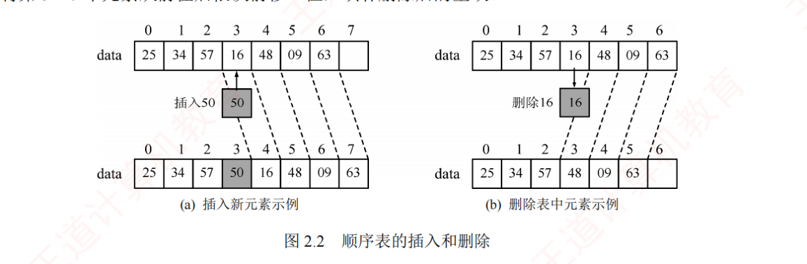
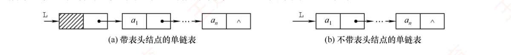
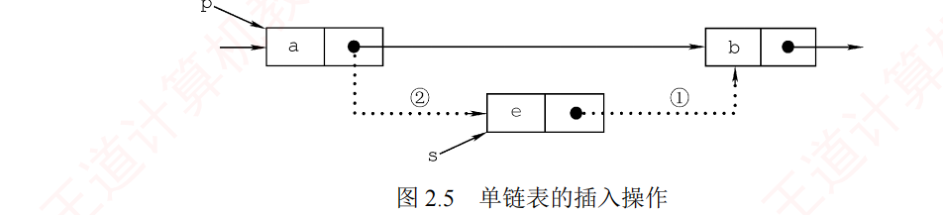
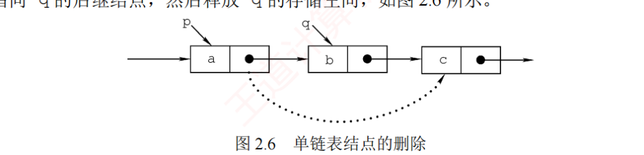
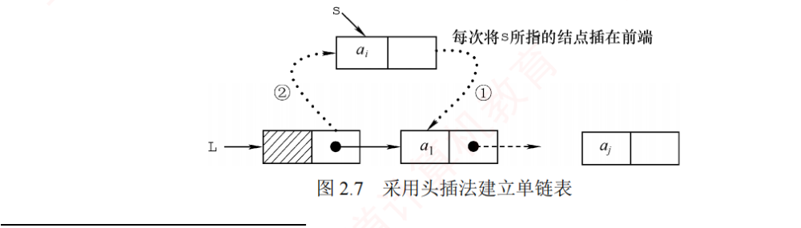
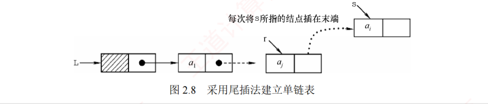
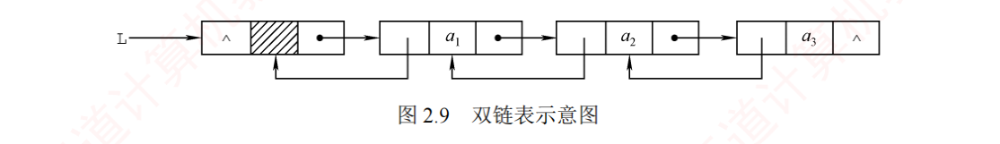
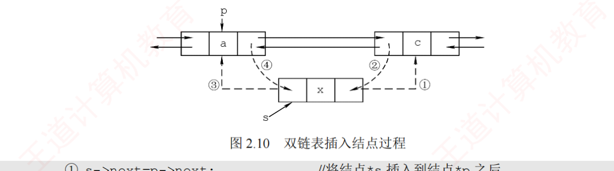
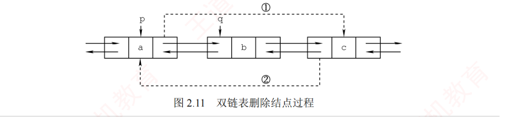
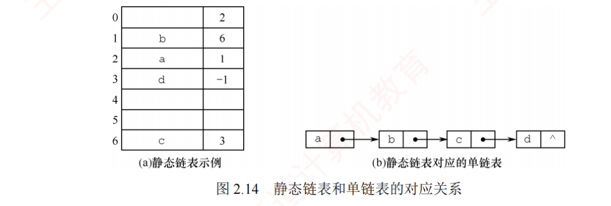

← 返回 408 复盘中心
怎么读这一页： 正文是书上的内容，我只做了
结构重排和取舍 。色块分两个维度——
① 按来源（原有的三种）：
我的补讲 / 挖 ——书上没写或写得太略、但你需要它才能真懂的部分；
必记结论 ——直接决定选择题对错；
陷阱 ——实测最容易做错的地方。
② 按动作（2026-09-01 回炉时新加的两种）：
背景 · 考试不碰 ——虚线灰块，
明确告诉你哪几段可以快速划过 （全是重点＝没有重点）；
知识串联 ——绿块，就地标出
这里和后面哪一章、和组原／OS／网络的哪个概念是同一件事 。
蓝色「挖」块统一按三段写：
书上说 X → 潜台词是 Y → 所以能考 Z ，
其中「能考 Z」全部有
练习系统本章 88 道题 作实证，不是凭空推的。
③ 2.4 节的两道算法真题按「大题三层」写 ：
💭 思路 （动手前看）→
✍️ 考场卷面 （自己写完再对照）→
📌 批注 （对照完校对）。
看完思路就合上页面自己写，别直接翻卷面。
右侧灰色
📄 p.N 点开就是原书对应页——它是
溯源锚点 （想看原书排版和多余例子时用），
不是"这里没写你自己去看" ：凡
📄 处的考点，本页正文都已讲全。
📄 p.13
本章定位
考纲内容 ：（一）线性表的基本概念 （二）线性表的实现：顺序存储、链式存储 （三）线性表的应用。
王道的复习提示 ：线性表是算法题命题的重点 。应牢固掌握其在两种存储结构下的各种基本操作，并注重动手能力的培养。考场时间紧张，试卷上不要求代码具备实际可执行性 ，应着重清晰地表达算法的核心思想与关键步骤，而不必过于拘泥于语法、边界等细节。即使采用暴力算法，通常也能获得大部分分数。注意：算法题只能使用 C/C++ 语言实现。
挖 · 本章其实只有两张脸：53 道选择题只考两类，35 道综合题只考七个模板
书上说 ：线性表是算法题命题的重点，要牢固掌握两种存储结构下的各种基本操作。潜台词是 ：这句话把本章劈成了互不相干的两半 ，复习方法完全不同——
选择题那一半 （53 道）实测只考两类：①「性质与选型」——给一组需求选存储结构、或问某个操作的复杂度；②「指针语句」——给几行指针语句判顺序、判结果 ，
连本章全部 6 道选择题统考真题 （2016×2、2021、2023×2、2024）都落在这两类里，没有第三类；
综合题那一半 （35 道）则只考七个可默写的代码模板 （见本页 2.4 节），十道真题一个不漏地被它们覆盖。所以能考 ：这一章不要"通读"，要分两条线各刷一遍 ——选择题线背两张表（选型三问 + 指针语句铁律），
综合题线默写七段代码。把两条线混着刷，是本章最常见的时间浪费。
我的补讲 · 这一章是全书性价比最高的一章
实测本章 88 道课后题里
综合题占 36 道 ——全书任何一章都没这么多，其中
10 道是统考真题 （2009 倒数第 k、2010 循环左移、2011 双序列中位数、2012 公共后缀、2013 主元素、2015 绝对值去重、2018 缺失最小正整数、2019 重排、2020 三元组最小距离、2025 乘积最大）。
408 的链表 / 数组大题几乎就在这 10 道的射程内。
另外注意王道那句「不要求代码可执行」——这是
阅卷口径 ，不是让你写伪码。正确姿势是：平时背能跑的严谨版（
代码默写手册 ），考场写精简版。手上有严谨版才敢精简，反过来不行。
挖 · 从考纲那三句话就能读出本章的分数结构
书上说 ：考纲三条——（一）线性表的基本概念 （二）线性表的实现：顺序存储、链式存储 （三）线性表的应用。潜台词是 ：三条的分量完全不等 。（一）只值一道选择题（2 分，且十七年只在非真题里出现）；
（二）是选择题主战场；（三）「线性表的应用」五个字，就是 13 分的算法设计题 ——
统考从不用「应用」去指选择题，凡考纲写「应用」的地方（本章、ch5 树的应用、ch6 图的应用）都是大题落点。所以能考 ：本章十七年里出了 10 道算法设计真题 （2009 倒数第 k、2010 循环左移、2011 双序列中位数、
2012 公共后缀、2013 主元素、2015 绝对值去重、2018 缺失最小正整数、2019 重排、2020 三元组最小距离、2025 乘积最大），
平均不到两年一道 ，是全书密度最高的算法题产地。选择题只有 6 道真题（合计约 12 分），二者分值差了 10 倍 ——
时间也该按这个比例分。
串 · 🔑 线性表是全书的根，后面每一章都是在它身上做加减法
→ ch3 栈和队列是操作受限 的线性表（只限定插删位置，逻辑关系仍是一对一，所以仍然线性）；
数组和特殊矩阵是顺序表在二维上的推广 （地址公式从 (i−1)×size 变成行优先/列优先两式）。→ ch4 串是元素受限 的线性表（元素只能是字符）。→ ch5 / ch6 树把"一对一"放宽成一对多、图放宽成多对多；
但它们的存储 仍然只有本章这两招——二叉链表就是链表、邻接表是"链表的数组"、邻接矩阵是二维顺序表。→ ch7 / ch8 查找和排序的每一条结论，前提都是"数据放在顺序表里还是链表里"
（折半查找只能顺序表、快排堆排要随机存取、只有归并和基数适合链表）。一句话记牢 ：后面六章讲的是逻辑关系变复杂了 ，而装东西的容器一直只有这两种 。
本章没吃透，后面每一章的存储部分都要回头补。
2.1 线性表的定义和基本操作
📄 p.13–14
线性表 是由 n（n ≥ 0）个相同数据类型 的元素组成的有限序列 。n 为表长，n = 0 时为空表。一般形式：
L = (a₁, a₂, …, ai , ai+1 , …, an )
a₁ 是唯一的「第一个」元素（表头元素），an 是唯一的「最后一个」元素（表尾元素）。除第一个元素外，每个元素有且仅有一个直接前驱；除最后一个元素外，每个元素有且仅有一个直接后继 ——这种一对一 的线性逻辑关系正是「线性表」名称的由来。
线性表的特点：
表中元素的个数有限 ；
表中元素具有逻辑上的顺序性 ，存在明确的先后次序；
表中元素都是数据元素 ，每个元素都是不可分割的单位；
表中元素的数据类型都相同 ，意味着每个元素占有相同大小的存储空间；
表中元素具有抽象性 ，仅讨论元素之间的逻辑关系，不考虑其究竟表示什么内容。
挖 · 定义里的五个词，四道题一人认领一个
书上说 ：线性表是 n 个
相同数据类型 的元素组成的
有限 序列 ，除首元素外每个元素有
唯一前驱 、除尾元素外有
唯一后继 。
潜台词是 ：这句定义里被下划线的每一个词，都是一道现成的选择题——命题人不需要设计题目，
把定义里的某个词删掉或改掉，就是一个错误选项 。
所以能考 ：本节四道题正好把词分完了，并排看一眼就再也不会错：
题 问的是定义里的哪个词 答案与要害 2.1-1 「n 个（ ）的有限序列」 数据元素 。干扰项「数据项」是元素之下 的层次（一条记录里的一个字段），差一级2.1-2 「下列哪个是线性表」 100 个字符组成的序列 。三个干扰项各删掉定义里的一个词，见下一块2.1-3 「除开始元素外，每个元素（ ）」 只有唯一的前驱 。对称记法：说"除开始"就答前驱，说"除最后"就答后继 2.1-4 「既无前驱又无后继，表中有几个元素」 1 。首元素无前驱、尾元素无后继，两者同时成立 ⟹ 首＝尾 ⟹ n=1（注意不是 0，题干说了"非空"）
⚠️ 2.1-4 的坑在"非空"两个字——去掉这两个字答案就变成"0 或 1"。
本章后面还有一道同款（2.3-27），也是靠"非空"分胜负。
挖 · 2.1-2 的三个错误选项，是「干扰项怎么造」的标本
书上说 ：只有「由 100 个字符组成的序列」是线性表。潜台词是 ：另外三个选项各删掉了定义里的一个词 ，而且删的位置是固定套路：集合 」——删掉了序列（次序） 。集合里元素之间没有先后关系，是 ch1 图 1.1 里的第四类结构。所有整数 组成的序列」——删掉了有限 。无限序列不是线性表。邻接表 」——最阴的一个：它拿存储结构 来冒充逻辑结构 （邻接表是 ch6 图的存储方式）。所以能考 ：以后见到这类"哪个是线性表/哪个是线性结构"，就按有限 → 有序 → 同类型 → 是逻辑结构吗 四步筛，
一步一个选项，不用凭感觉。第四步"是不是拿存储结构冒充逻辑结构"最容易漏。
必记结论 · 逻辑结构 vs 存储结构，别混
线性表是一种逻辑结构 ，表示元素之间一对一的相邻关系；顺序表和链表是两种存储结构 ，属于不同层面的概念。数据元素 （不是「数据项」，数据项是元素之下的层次）。
串 · 🔑 「逻辑结构 vs 存储结构」这条线，本章是它第一次落到实物上
ch1 讲这对二分时只能举例子；到本章它第一次有了实体 ——线性表是逻辑结构，顺序表和链表是它的两种存储结构 ，
一个逻辑结构可以有多种存储，这就是本章为什么有两大节。→ 组原 ch4 ISA（指令系统）vs 微架构 ：同一套 x86 指令（逻辑），可以用 CISC 微码实现也可以用 RISC 内核实现（存储/实现）。→ OS ch4 文件的逻辑结构 （无结构流式 / 有结构记录式）vs 物理结构 （连续 / 链接 / 索引）——
连字都一样，而且 OS 那三种物理结构正好就是本章这两种加索引，见本页 2.3.6 后面那块串联。→ 网络 ch1 服务 vs 协议 ：服务是"这一层对上层承诺做到什么"（逻辑），协议是"两端怎么实现它"（存储/实现）。一句话记牢 ：四门课都在反复问同一个问题——你问的是"是什么关系"，还是"在机器里怎么摆" 。
凡是选项里把这两层混在一起说的（如"顺序表与一维数组逻辑结构相同"），基本都是错的。
背景 · 五条「特点」里只有三条会被考
书上列的五条特点中，「表中元素都是数据元素」「表中元素具有抽象性」 这两条是措辞 不是考点——
前者只是把"数据元素"这个词再说一遍，后者是说"我们只关心关系不关心内容"，统考从未据此设过题。个数有限 、有先后次序 、类型相同 ——正好对应 2.1-2 的三个错误选项。
这一段扫一眼就走。
线性表的基本操作
操作 含义 InitList(&L)初始化表，构造一个空的线性表 Length(L)求表长，返回元素个数 LocateElem(L,e)按值查找 ：查找值为 e 的元素，返回其位置GetElem(L,i)按位查找 ：获取第 i 个位置的元素值ListInsert(&L,i,e)在第 i 个位置插入指定元素 e ListDelete(&L,i,&e)删除第 i 个位置的元素，用 e 返回被删元素的值 PrintList(L) / Empty(L) / DestroyList(&L)输出 / 判空 / 销毁
① 基本操作的具体实现取决于所用的存储结构 ，存储结构不同，算法的实现方式也不同。② 符号 & 表示 C++ 中的引用调用；在 C 语言中可通过指针实现相同效果。
挖 · 这张基本操作表，是算法设计题的第一段采分点
书上说 ：基本操作有 InitList、Length、LocateElem、GetElem、ListInsert、ListDelete、PrintList、Empty、DestroyList。潜台词是 ：这张表不是让你背名字的，它是算法题第一段答案的模板 ——
王道自己在章末写了「若能正确定义数据结构 并清晰阐述算法思想，通常可获得至少一半的分数」，
而"定义数据结构"写的就是这张表对应的结构体 + 你要用到的那几个操作 。所以能考 ：考场上大题开头照抄两件事——① 结构体定义（SqList 或 LNode，见下两节）；
② 你要调用的基本操作的函数原型 （哪些参数带 &）。带 & 的是会被改写 的参数
（InitList(&L)、ListInsert(&L,i,e)、ListDelete(&L,i,&e) 的 e 用来带回被删的值 ）；
不带 & 的是只读的。C 语言里没有引用，同样的位置要写指针 ——考场用 C 写就必须自己转成 LinkList *L，
这一步写错，整道题的指针操作全都改不动实参。
串 · 🔑 「按位查找 vs 按值查找」这两条线，一直通到组原的相联存储器
表里 GetElem(L,i)（按位序找）和 LocateElem(L,e)（按值找）看着只差一个参数，
实际是两种完全不同的访问范式 ，四门课都在这条分界线上出题：→ ch7 整章的查找（顺序、折半、B 树、散列）全都是按值查找 的优化史；而按位查找 在顺序表里已经 O(1)，没有优化空间。→ 组原 ch3 按地址访问 （主存、Cache 直接映射）＝ 按位查找；按内容访问 （相联存储器、全相联 Cache、TLB）＝ 按值查找，
硬件是靠"同时比较所有单元"才做到 O(1) 的——这正是软件做不到、只能靠散列去逼近的事。→ OS ch3 页表是"按位查找"（页号当下标，O(1)）；反置页表是"按值查找"（拿帧号找页号，得查表）。一句话记牢 ：按位＝地址能算出来，按值＝地址只能找出来 。本章顺序表能 O(1) 是因为前者，
链表连按位都得走一遍，是因为它连位序都算不出地址。
挖 · 表里最不起眼的 DestroyList，对应考场上的一个固定扣分点
书上说 ：DestroyList(&L) 销毁线性表，释放所占用的内存空间。潜台词是 ：顺序表的"销毁"只是把 length 置 0（静态分配时连这都不用），
但链表的每个结点都是单独 malloc 出来的，必须逐个 free ——这条差别在本章的算法题里天天要用：
凡是"删除结点"的题，卷面上缺一句 free(p) 就要扣分 （本章 2.3-综1、综4、综7、综9 全是删除题，2015 真题也是）。所以能考 ：写链表删除的固定三步——① 用一个临时指针 q 记住待删结点 ② 让前驱跨过它 ③ free(q) ，
顺序不能颠倒 （先跨过再想找它就找不到了）。
→ OS ch3 这里的 malloc/free 每一次都会真的落到 OS 的动态分区分配 上（首次适应/最佳适应），
忘了 free 就是内存泄漏 ——OS 那一章讲的正是这笔账。
2.2 线性表的顺序表示（顺序表）
📄 p.15–16
考点追踪：顺序表的应用（算法题）2010、2011、2018、2020、2025 · 顺序表上操作的时间复杂度分析 2023
线性表的顺序存储又称顺序表 ：用一组地址连续 的存储单元依次存储线性表中的数据元素，使得逻辑上相邻的元素在物理位置上也相邻 。第 1 个元素存储在起始位置，第 i 个元素的存储位置之后紧接着存第 i+1 个元素。
设起始地址为 LOC(A)，每个元素占 sizeof(ElemType)，则第 i 个元素的地址为
LOC(A) + (i − 1) × sizeof(ElemType)
由于任意元素的地址与起始地址之间的偏移量与其位序呈线性关系 ，因此可在 O(1) 时间内直接访问表中任意位置的元素——这就是顺序存储属于随机存取 的原因。
挖 · 地址公式只有一条，但统考只在「起点」上做文章
书上说 ：第 i 个元素的地址 = LOC(A) + (i−1) × sizeof(ElemType)。潜台词是 ：这条公式里真正会变的只有 (i−1) 那个括号 ——它是"位序 i 减去起始位序"的意思。
题目一旦换个起点，整条公式就跟着换，而公式本身一个字没变 ：(i−1)；下标 从 0 起 ⟹ 偏移 i；k 字节 ⟹ 乘 k；题目按"字"给 ⟹ 先换算成字节；LOC + [(i−i₀)×n + (j−j₀)]×k——还是同一条公式，只是把二维压成一维 （ch3 会正式讲）。所以能考 ：见到地址题先在草稿纸写三件事——起始位序是 0 还是 1、单位是字节还是字、下标上界含不含 ，
三者定了直接套。本章不考地址计算的难题，但 ch3 的数组/特殊矩阵、组原的变址寻址全靠这条公式吃饭。
串 · 🔑 「下标能算出地址」是枢纽「分块与映射」的源头，四门课全在用
顺序表 O(1) 的全部理由只有一句：地址是算出来的，不是找出来的 。这一招在 408 里被反复复制：→ ch5 完全二叉树 用一维数组存，结点 i 的孩子是 2i / 2i+1、父亲是 ⌊i/2⌋——连指针都省了 ，靠的就是"下标算地址"。→ ch7 散列表 是这一招的极限形态：把"关键字"直接算成地址（直接定址法就是 H(key)=key）。→ OS ch3 页表 本质就是个顺序表：页号当下标，O(1) 取出页框号——所以查页表不叫"查找"叫"访问"。→ 组原 ch3 Cache 直接映射 ：主存块号 mod 块数 = 行号，也是算出来的；全相联才要"找"，所以才慢、才需要硬件相联比较。一句话记牢 ：凡是能把「找」变成「算」的地方，复杂度就从 O(n) 掉到 O(1) ——
这是 408 里出现次数最多的一个念头，本章是它第一次出现。
陷阱 · 位序从 1 开始，数组下标从 0 开始
线性表元素的位序从 1 起 ，而数组下标从 0 起 。所有插入/删除代码里的 L.data[i-1] 都是在做这个转换，考场上写代码前先在草稿纸角上写一句「i 是位序」。
串 · 「位序从 1、下标从 0」这种差一错误，在组原和 OS 里换了身衣服还在
本章的 L.data[i-1] 是最简单的一次差一转换，同样的坑在别科都以更贵的形式出现：→ 组原 ch3 字地址 vs 字节地址 （按字节编址的机器上，第 i 个字的地址是 4i 不是 i）；主存容量算成"最后一个地址 + 1"。→ OS ch3 页号从 0 开始 ，所以 n 位页内偏移对应的页大小是 2ⁿ 而不是 2ⁿ−1；逻辑地址 / 页大小 = 页号，取整和取余各管一半。→ ch7 折半查找的 mid=(low+high)/2 与判定树的层数，也是同一类边界账。一句话记牢 ：凡是出现"第几个"和"下标"两个词并存的题，先写清楚谁从 0 起、谁从 1 起 ，再动笔。
挖 · 2.2-3 把「随机存取」的定义精确到了一个词
书上说 ：顺序存储属于随机存取。潜台词是 ：这个词的准确含义是「查找序号 为 i 的元素的时间与元素个数 n 无关」 ——
注意两处限定：①「序号」不是「值」 ②「与 n 无关」不是「很快」 。
2.2-3 的四个选项正是（按值 / 按序号）×（有关 / 无关） 四格全填，只有"按序号 + 无关"是随机存取的定义，其余三格都是造出来的。所以能考 ：这个精确定义在本章还要再用一次——静态链表也放在数组里，却不 是随机存取 （2.3-31 的 Ⅰ 就是拿这个设的坑），
因为它取第 i 个元素要顺着游标走，时间与 i 有关。「存在数组里」≠「随机存取」，判据只有"地址能不能直接算出来"。
挖 · 2.2-2 的四个选项，把顺序表的四条性质各否定了一次
书上说 ：顺序表用一组地址连续的存储单元依次存储线性表的元素。
潜台词是 ：这一句里塞了四条可以被单独否定的性质，2.2-2 就是把它们一条一条拿出来做选项：
选项 动了哪条性质 判 顺序表可用一维数组表示，因此两者逻辑结构相同 混淆逻辑 与存储 ：一维数组只是存储手段，栈、队列、树也能用数组存 ✗ 顺序表中逻辑相邻的元素物理位置上不一定相邻 否定了"地址连续"——那是链表 ✗ 顺序表和一维数组一样，都可以随机存取 没动任何性质，是正确 陈述 ✓ 答案 顺序表中每个元素的类型不必相同 否定了线性表定义里的"相同数据类型" ✗
所以能考 ：
四选项里有三个是"把一句正确的话改掉一个词" ——
这类题的解法不是找"最像对的"，而是
逐项指出它改了哪个词 ；指不出来的那一项就是答案。
⚠️ 第一项那个「
因此 」又出现了一次（前半句"顺序表可用一维数组表示"是对的，后半句才错）——
本章第三次用这一招了 ，见 2.3-31 的 Ⅰ 和 2.3.6 末尾那块。
静态分配 vs 动态分配
静态分配 动态分配 #define MaxSize 50
typedef struct{
ElemType data[MaxSize];
int length;
}SqList; #define InitSize 100
typedef struct{
ElemType *data; // 动态数组指针
int MaxSize, length;
}SeqList;
// C: L.data=(ElemType*)malloc(sizeof(ElemType)*InitSize);
// C++: L.data=new ElemType[InitSize]; 数组大小和空间在编译时 已固定，空间占满后再插入会溢出 存储空间在程序运行中 动态申请；占满时另开一块更大的空间 ，把原有元素全部复制过去，实现扩容
背景 · 左右两段代码只用记一句话，不必背
静态分配与动态分配的那两段结构体定义，统考从未要求默写 ，考的永远是它们的性质差别 。
整段浓缩成一句：静态 = 编译时定死的定长数组，动态 = 运行时 malloc 出来的变长数组，两者都是顺序存储。 malloc(sizeof(ElemType)*InitSize) 这一行的形状——括号里是"单个大小 × 个数"。
挖 · 2.2-12 的四个选项，把「扩容」这件事的两个关键词各藏了一个
书上说 ：动态扩容时另开一块更大的空间，把原有元素全部复制过去。潜台词是 ：这句话里有两个词决定答案——「更大（n+m 而不是 m）」和「一块（连续）」 。
2.2-12 的四个选项正是把这两个词各删一个、各留一个 造出来的：
「m 个」（两个词都删）、「m 个连续」（漏了 n+）、「n+m 个」（漏了连续）、「n+m 个连续 」（正确）。所以能考 ：答这类题时把两个词都念一遍再选。更要紧的是它背后的事实——扩容的代价是 O(n) 的整体搬迁，
不是"在原地续一段" ：这解释了为什么"频繁插入且规模不定"的场景不能选顺序表，也是选型题的一条隐藏依据。
串 · 🔑 「要不到一块连续空间」这件事，在 OS 里有个正式名字叫外部碎片
顺序表扩容失败，不是因为内存不够，而是因为凑不出一块足够大的连续 内存 ——总量够、但被切碎了。→ OS ch3 这正是动态分区分配 的核心难题：外部碎片 ；OS 给的两条解法与本章一一对应——
紧凑（compaction） 就是顺序表扩容时的"整体搬迁"（同样 O(n)、同样要求全部数据可移动），
分页 则干脆放弃连续要求，把逻辑连续和物理连续解耦（代价是要维护页表）。→ OS ch4 文件的连续分配 会有同样的毛病：文件要扩大时后面被占了，只能整体搬走。→ ch1 这就是 ch1 里"外部碎片"那条串联的具体落点。一句话记牢 ：凡是要求"连续"的存储方案，都要为外部碎片和整体搬迁买单 ；本章的顺序表是这条规律最小的样本。
必记结论 · 动态分配≠链式存储
动态分配仍然属于顺序存储结构 ，物理结构没有变化，依然支持随机存取，只是空间大小可以在运行时调整。扩容的真相 ：不是「在原地再加 m 个格子」，而是开一块 n+m 的新连续区再整体搬迁 ——所以扩容失败意味着系统没有足够大的连续 空间。
挖 · 「存储密度」书上只给了名词没给公式，但它是一道现成的选择题
书上说 ：顺序表存储密度高，每个结点只存数据元素，无额外指针开销。潜台词是 ：这句话背后有个可以算的比值——
存储密度 = 结点中数据本身占的空间 ÷ 整个结点占的空间
顺序表 = 1 （100%，一个字节都没浪费）；单链表若 data 占 4B、next 占 4B，则密度 = 4/8 = 0.5 ；
双链表 4/12 ≈ 0.33 ——指针越多，密度越低 。所以能考 ：2.2-1 问"顺序存储结构的优点"，四个选项里唯一对的就是存储密度大 （插入方便、删除方便都是链表的优点）。
顺序表只有两个优点：随机存取、存储密度高 ——记死这两条，这类题不用想。
串 · 「存储密度」这个比值，在网络里叫传输效率，在组原里叫标记开销
"有效载荷 ÷ 总开销"是同一个念头在三门课里的三个名字：→ 网络 ch3/ch5 传输效率 = 数据部分 ÷（数据 + 首部） ：以太网帧最小 64B 而首部就占 18B、TCP 首部 20B——
所以网络里"小包不划算"和本章"链表存储密度低"是同一笔账。→ 组原 ch3 Cache 每一行除了数据块，还要存标记位 + 有效位 + 脏位 + LRU 位 ，
算 Cache 总容量时这些"非数据开销"必须算进去——考过多次的计算点。→ OS ch3 页表项本身也是开销，页面越小页表越大，这就是"页面大小折中"的一半理由。一句话记牢 ：任何"为了灵活而附加的元数据"都要用空间去换 ——指针、首部、标记位，本质是同一种税。
顺序表的优点 ：① 可随机访问，O(1) 时间按位序找到元素；② 存储密度高 ，每个结点只存数据元素，无额外指针开销。顺序表的缺点 ：① 插入和删除要移动大量元素 ；② 要求连续存储空间，不够灵活。
背景 · 「优点两条 + 缺点两条」这四句，实际只有两条会被单独考
这四条散文里，优点的两条（随机存取、存储密度高） 是选择题直接问的（2.2-1）；
缺点的两条 则从不单独设题，它们只是"链表优点"的镜像，你答链表题时自然会用到 。要背的是"顺序表的两个优点"，缺点不用背 ——考场上遇到"顺序表的缺点是什么"，
直接说"插删要移动元素、要求连续空间"即可，这两句从"优点"反过来说就有。
串 · 🔑 顺序存储是 ch7 折半查找、ch8 快排堆排的入场券
本节这几条性质，后面两章会当成前提条件 反复引用，而且是不满足就不能用 的硬前提：→ ch7 折半查找必须"顺序存储 + 有序" ——两个条件缺一不可，这本身就是一道统考真题的考点；
链表即使有序也折不了半，因为它拿不到"中间那个元素"。→ ch8 快速排序、堆排序、折半插入排序都要求随机存取 ，只能用在顺序表上；
只有归并排序和基数排序适合链表 （它们只顺序访问）。ch8 那张"哪些排序适用于链表"的表，根子就在本节。→ 组原 ch7 / OS ch5 磁盘上做外部排序时同样的道理：顺序读远快于随机读，所以归并成了外部排序的唯一选择。一句话记牢 ："能不能 O(1) 跳到中间"这一条，决定了后面两章一半算法的适用范围。
串 · 🔑 局部性原理：同样是 O(n) 的遍历，顺序表比链表实际 快得多
大 O 相同不代表跑得一样快——这件事在 408 里的正式说法叫局部性原理 ，本章是它的第一个反例现场：→ 组原 ch3 顺序表元素地址连续 ，一次 Cache 缺失会把整块（如 64B）读进来，
后面十几个元素全部命中 ⟹ 空间局部性极好 ；链表结点散落在堆里 ，每访问一个结点几乎都要一次新的缺失 ⟹ 命中率极低。
这就是"数组遍历比链表遍历快好几倍"的真正原因，而大 O 完全看不出来 。→ OS ch3 页面置换同理：遍历数组只碰少数几页，遍历链表可能每个结点一页 ⟹ 缺页次数天差地别。→ OS ch5 磁盘的预读（超前读） 也是押注空间局部性，连续存放的文件才吃得到这个红利。数构的大 O 故意扔掉常数，组原/OS 关心的正是这些常数 。
考数构时按大 O 答，被问"为什么实际更快"时才搬局部性。
2.2.2 顺序表上的基本操作
📄 p.17–18
插入操作
bool ListInsert(SqList &L, int i, ElemType e){
if(i<1 || i>L.length+1) return false; // 判断 i 的范围是否有效
if(L.length >= MaxSize) return false; // 当前存储空间已满
for(int j=L.length; j>=i; j--) // 将第 i 个元素及之后的元素后移
L.data[j] = L.data[j-1];
L.data[i-1] = e; // 在位置 i 插入 e（注意下标转换）
L.length++;
return true;
}
为什么判断插入位置用 length+1，而移动元素的 for 循环用 length？因为合法插入位置包括第 n+1 位 ，但移动元素时最多从第 n 位开始后移。
挖 · 插入代码里的两个 if 就是两个采分点，且各有一个"差一"
书上说 ：先判断 i<1 || i>L.length+1 非法，再判断 L.length>=MaxSize 表满。潜台词是 ：这两行不是"防御性编程"，是阅卷点 ——王道自己在下面用小字问了一句"为什么这里是 length+1，循环里却是 length"，
说明它知道这是最容易写错的地方。原因只有一句：合法的插入位置有 n+1 个（含表尾之后），但能被搬动的元素只有 n 个。 所以能考 ：默写时把这两个边界当口诀记——「插入判 n+1，删除判 n」
（删除的合法位序只有 1..n，因为第 n+1 个位置上没有元素可删）。
大题里哪怕算法主体全对，缺了合法性判断也会被扣"鲁棒性"分 ；反过来，
题目若已说明"假设参数合法"，就别浪费时间写这段。
串 · 「插一个要搬一半」这笔账，OS 做内存紧凑时一模一样
顺序表插删的代价来自"保持物理连续"这个承诺 ：想在中间腾出一格，就得把后面所有元素整体挪一格。→ OS ch3 紧凑（拼接） 把分散的空闲分区合并成一大块，做法同样是"把后面的作业整体搬家"，
代价同样是 O(n) 的数据移动，同样要求所有地址可重定位（所以必须动态重定位 、要有重定位寄存器）。→ OS ch4 连续分配的文件要在中间插入一段内容，也只能整体后移或重写。一句话记牢 ："连续"是一种承诺，插入删除就是这个承诺的月供。
最好 最坏 平均 插入 表尾插入（i = n+1），不移动，O(1) 表头插入（i = 1），移动 n 个，O(n) 移动 n/2 个，O(n) 删除 删表尾（i = n），不移动，O(1) 删表头（i = 1），移动 n−1 个，O(n) 移动 (n−1)/2 个，O(n) 按值查找 目标在表头，比较 1 次，O(1) 在表尾或不存在，比较 n 次，O(n) 比较 (n+1)/2 次，O(n)
按序号查找 直接通过数组下标访问即可，时间复杂度 O(1) 。
挖 · 平均移动次数为什么一个是 n/2、一个是 (n−1)/2——书上只给了结果
书上说 ：插入平均移动 n/2 个元素，删除平均移动 (n−1)/2 个。潜台词是 ：两个分母不一样，是因为可选的位置数不一样 ，推一遍就再也不会记反：插入 ：合法位置有 n+1 个（第 1..n+1 位），等概率 1/(n+1)；插在第 i 位要移 n−i+1 个。
求和 [n+(n−1)+…+1+0] / (n+1) = n(n+1)/2 ÷ (n+1) = n/2 。删除 ：合法位置只有 n 个（第 1..n 位），等概率 1/n；删第 i 位要移 n−i 个。
求和 [(n−1)+…+1+0] / n = n(n−1)/2 ÷ n = (n−1)/2 。所以能考 ：记法是「插入比删除多一个位置，所以分子分母都多一个」 ；
顺带记住按值查找的平均比较次数是 (n+1)/2 （成功查找，n 个位置等概率），这三个数常在同一道题里一起给。
⚠️ 三个都是O(n) ，别把"平均移动 n/2"答成"平均复杂度 O(n/2)"——大 O 里没有常数。

图 2.2 顺序表的插入和删除（裁自原书 p.18）——插入时后段从后往前 依次后移，删除时后段从前往后 依次前移
挖 · 四道复杂度题并排看，2023 那道真题只是把前三道换了个问法
书上说 ：顺序表按序号查找 O(1)，插入删除 O(n)。
潜台词是 ：这一条被翻来覆去问了四遍，
每次都只留一个 O(1) 的选项 ，而那个选项
永远是"按下标直接读/写第 i 个" ：
题 问法 唯一的 O(1) 被排除的是什么 2.2-7 四个操作里哪些是 O(1) 访问第 i 个 ＋ 表尾之后插入 删第 1 个（要全部前移）、第 i 个后插（移 n−i 个） 2.2-10 「访问第 i 个」和「在第 i 个插入」 访问 O(1)、插入 O(n) 把"读"和"写"混为一谈 2.2-11 哪个运算是 O(1) 改变 第 i 个元素的值排序、插入、删除 2.2-13（2023 统考） 对有序 表哪个平均 O(1) 获取 第 i 个元素查找（折半 O(log n)）、按值插入、删第 i 个
所以能考 ：这类题不用逐项算，用一条判据扫——
「这个操作需不需要动到第 i 个之外的元素？」
不需要（读/改第 i 个、在表尾之后插）就是 O(1)，需要（插、删、排序、按值找）就不是。
2.2-7 里"表尾之后插入 O(1)"是唯一容易漏的一格 ：插在第 n+1 位一个元素都不用搬。
挖 · 2023 真题多出来的「有序」两个字，正是它的全部新意
书上说 ：（2.2-13）对顺序存储的有序表 ，哪个操作平均时间复杂度为 O(1)。潜台词是 ：题干平白加"有序"两个字，就是为了造出两个新的干扰项 ——
· A「查找包含指定值的元素」：有序 ⟹ 可以折半 ⟹ O(log₂n) 。这一项就是奖励给"知道有序表能折半"的人的陷阱，
它确实比无序快了，但仍然不是 O(1) 。但插进去仍要后移 O(n) 个元素 ⟹ 总体 O(n)。
这一项专坑"只算了查找、忘了移动"的人。所以能考 ："有序"只加速找 ，不加速搬 ——这句话在 ch7（折半查找）和 ch8（折半插入排序仍要 O(n²) 次移动）
还会各考一次，是同一条判据的三次复用。
必记结论 · 移动元素个数别记反
删除 第 i 个元素：其后的 ai+1 …an 各前移一格，共移动 n − i 个。插入 到第 i 个位置：第 i 个及其后的元素后移，共移动 n − i + 1 个。插入比删除多搬一个 （因为插入要给新元素腾位）。
挖 · 选型题的另一半：把「谁效率高」的题按三格分类，答案就是查表
书上说 ：顺序表可随机访问、插删要移动元素；链表插删只改指针、但不能随机访问。
潜台词是 ：所有"哪个操作在顺序表/链表上更高效"的题，答案都落在
三个格子 里，
而命题人每次只是换一批操作名词：
格子 典型操作 出处 顺序表占优 输出第 i 个元素值 · 交换第 3 与第 4 个 · 存取第 i 个及其前驱后继 · 表尾插入/删除 2.2-5、2.2-6、2.2-8 的 Ⅰ Ⅱ、2.2-7 的 Ⅱ 链表占优 删除所有值为 x 的元素 · 在表头插入/删除 · 两表拼接 · 频繁插删且规模不定 2.3-5 的 A、2.3-2、2.3-29 两者相同 顺序输出全部 n 个元素 · 顺序输出前 k 个 · 按值查找（无序时） 2.2-8 的 Ⅲ、2.3-5 的 C
所以能考 ：第三格
最容易失分 ——考生一看到"链表要遍历"就选顺序表占优，
可"顺序输出全部元素"两边都是 O(n)、都要走一遍，
谁也不占优 。
判据：
看这个操作要不要"跳"。要跳 ⟹ 顺序表；只是"走" ⟹ 平手；要边走边改结构 ⟹ 链表。
挖 · 2.2-4 这类「与什么无关」的题，考的是你有没有把公式写出来
书上说 ：顺序表所占空间 = 表长 × sizeof(元素类型)。潜台词是 ：凡是"与（ ）无关"的题，把公式写出来，公式里没出现的那个量就是答案。
这条公式里出现了表长 、元素类型 （元素是结构体时，各字段类型决定了 sizeof），
唯独没有出现"元素的存放顺序" ——所以 2.2-4 选它。所以能考 ：本章还有一道同款是 2.2-3（随机存取"与 n 无关"），
ch1 的复杂度题、组原的容量题也全是这个套路。不要在脑子里"感觉"哪个无关，写出公式，一秒钟的事。
2.3 线性表的链式表示
📄 p.30–31
考点追踪：单链表的应用 2009、2012、2013、2015、2016、2019
链式存储的线性表不要求地址连续 ：逻辑上相邻的元素物理位置上可以不相邻，通过指针 建立元素之间的逻辑关系，因此插入或删除操作无须移动元素 ，只需修改相关指针。代价是失去了顺序表的随机存取能力 ，只能从头开始顺序访问。
挖 · 「不要求地址连续」这一句，换来了什么、赔掉了什么——本节全部考点都是这笔交易的推论
书上说 ：链式存储不要求地址连续，插入删除无须移动元素，代价是失去随机存取能力。潜台词是 ：链表只做了一件事 ——用一个指针域，把"物理相邻"这个承诺赎回来。之后的一切都是这笔交易的连锁反应：换来的三样 ：① 插删只改指针（前提是已经站在位置上 ）；② 不需要连续空间、不会因外部碎片而失败；③ 容量按需增长，不用预设 MaxSize。赔掉的三样 ：① 随机存取没了，按位查找退回 O(n)；② 存储密度掉到 0.5 或 0.33；③ 不能折半，于是 ch7 的折半、ch8 的快排堆排全部用不了。所以能考 ：本节所有"链表和顺序表谁好"的判断题（2.3-1、2.3-5、2.3-14、2.3-2）都能用这张交易清单直接判——
选项若只说好处不提代价、或反过来，就是错的 。这也是"谁绝对优于谁"一律错的根本原因：这是一笔交易，不是一次升级。
串 · 🔑 「指针域里存的是一个地址」——链式思想在四门课里遍地都是
结点 = 数据 + 一个地址。这个最小构件被后面每一章拿去改造：→ ch5 二叉链表 ＝data + 两个地址（lchild/rchild）；线索二叉树把空的那两个地址改存前驱后继。→ ch6 邻接表 ＝"顺序表装表头 + 每个表头挂一条单链表"，是本章两种存储的组合 。→ ch7 链地址法（拉链法） 解决散列冲突，挂的就是单链表；B 树结点里的指针也是同一件事。→ OS ch2/ch3/ch4 PCB 的就绪队列 、空闲分区链、文件的隐式链接分配 （每块留一个指针指向下一块）——
OS 里"链接分配不支持随机访问，要读第 i 块必须从头读 i 次"，和本章"链表按位查找 O(n)"是同一句话 。→ 组原 ch4 间接寻址 ：操作数字段里存的不是数据而是"数据的地址"，需要多访存一次——
指针的代价在硬件层就是这一次额外访存。一句话记牢 ：凡是"存了一个地址去指向别处"的结构，都要为"多一次跳转"和"不能随机访问"买单。
背景 · 开头这两段定义性文字，考点只有一句
"用一组任意的存储单元存储线性表的数据元素""通过指针建立元素之间的逻辑关系"——这两句是定义的复述 ，
统考从不单独考它们。整节要拿走的只有一句：逻辑相邻 ≠ 物理相邻，关系靠指针显式维护 （2.2-2 的 B 项、2.3-1 的 Ⅱ 项就靠这句判）。默写 ——它是每道算法大题的第一行。
typedef struct LNode{ // 定义单链表结点类型
ElemType data; // 数据域
struct LNode *next; // 指针域
}LNode, *LinkList;
挖 · 2.3-3 只换了一个词：问的是「结点之间」还是「结点内部」
书上说 ：链式存储不要求地址连续。潜台词是 ：这句话省略了主语的范围——不连续的是结点与结点之间 ；
一个结点内部的 data 域和 next 域必须连续 （它就是一个 struct，编译器分配的是一块连续空间）。所以能考 ：2.3-3 问"链式存储设计时，结点内 的存储单元地址（ ）"，答案是一定连续 ——
四个选项里有三个都在描述"结点之间"的情形，全是造出来的。
见到这类题先圈出题干里的范围词（结点内 / 结点间 / 整个链表），答案随范围而变。
挖 · 「插删无须移动元素」这句话，被省略了一个前提
书上说 ：链表插入或删除无须移动元素，只需修改相关指针。潜台词是 ：这是在"已经站在正确位置上" 的前提下说的。真实代价要拆成两段：
总代价 = 找到位置（可能 O(n)）＋ 改指针（O(1)）
只有当题目把指针直接给你 （"已知 p 指向该结点"）时，才真是 O(1)。所以能考 ：这是本章最高产的一个坑，至少四处用到它——
· 2.3-19 有序单链表插入一个数仍保持有序 ⟹ O(n) （找位置 O(n)，链表折不了半）；但前提是已知操作位置 "那半句，就是这条前提的正式写法。考场判据：题干有没有给你一个指向该位置（或其前驱）的指针？给了才敢写 O(1)。

图 2.4 带头结点（a）和不带头结点（b）的单链表（裁自原书 p.31）
挖 · 头结点的本质是「哨兵」，它花一个结点的空间买掉的是「特判」
书上说 ：引入头结点有两个好处——表头位置的操作与其他位置一致；空表与非空表的处理统一。潜台词是 ：这两句其实是同一件事 ：让"第一个结点"不再特殊 。
不带头结点时，删首元要改的是 L 本身（实参级修改，函数里得用二级指针或返回新头），
删中间元素改的是 pre->next——两套代码 ；有了头结点，首元也有前驱了，一套代码通吃 。所以能考 ：2.3-9 问"增加头结点的目的"，答案是方便运算的实现 ；
最像的干扰项"标识首结点的位置"是错的——那是头指针 的活，头结点的数据域通常什么也不存 。
头指针（必有，指向链表第一个结点）和头结点（可选，是一个真实结点）是两个东西 ，
这一组词在本章、ch3 链队列、ch5 都要用，别混。
串 · 「哨兵」这一招，ch7 和 ch8 各还会用一次
→ ch7 顺序查找的哨兵 ：把待查值放进 A[0]，循环里就不必再判越界 ——
省掉的正是本章头结点省掉的那种"边界特判"，代价同样是一个格子的空间。→ ch8 直接插入排序 的 A[0] 既当暂存单元又当哨兵，也是同一招。→ ch5 线索二叉树常加一个头结点 ，让第一个和最后一个结点的线索有地方可指，闭成一个环。一句话记牢 ：花 O(1) 的空间消灭一个 if，是 408 里反复出现的小手法 ；
看到"为什么要加这个多余的单元"，答案基本都是"为了不写特判"。
必记结论 · 头指针 vs 头结点 + 判空四连表
头指针 始终指向链表的第一个结点（无论带不带头结点）；
头结点 只存在于带头结点的链表中，它是链表的第一个结点，
数据域通常不存实际数据 。
引入头结点的两个好处：①
操作统一性 ——在表头插入/删除时与其他位置逻辑一致，无须特殊处理；②
空表与非空表处理统一 ——头指针始终是非空指针。
结构 空表条件 不带头结点单链表 L == NULL带头结点单链表 L->next == NULL带头结点循环单链表 L->next == L（指回自己，不是 NULL ）带头结点循环双链表 L->next == L && L->prior == L
记法：
带头结点看 next，不带头结点看自己；循环链表判「指回自己」，非循环判 NULL。
挖 · head->next->next==head 有两个解，这是循环链表判空题的固定加料
书上说 ：带头结点的循环单链表，空表条件是 L->next==L。潜台词是 ：一旦条件里多套一层 ->next，解就不唯一 了——
· 空表：head->next 就是 head，再 ->next 还是 head ✓（长度 0 ）；head->next 是首元结点，首元的 next 指回 head ✓（长度 1 ）。所以能考 ：2.3-27 的答案是"0 或 1" ，而选项里 0、1、2 三个单值全是给"只推一种情况就交卷"的人准备的。破法：碰到循环链表的指针等式，画两张最小图（空表、单元素表）各代一遍 ，两秒钟的事。
⚠️ 与 2.1-4 对照记：那道题因为题干写了"非空"，答案才唯一是 1；这道没写"非空"，就得答两个。差别只在题干那两个字。
挖 · 不带头结点时，函数签名会变——这是大题的隐形扣分点
书上说 ：不带头结点的单链表，空表条件是 L==NULL。潜台词是 ：空表条件不同只是表象，真正的后果在函数怎么写 ：不带头结点时，
凡是可能改动第一个结点的操作（头插、删首、逆置、循环移位），都会改变 L 本身 ，
而 C 语言是值传递 ⟹ 必须用二级指针 LNode **L，或者把新头指针 return 回去 ，否则调用方手上的指针是旧的。所以能考 ：2.3-综14（循环右移 k 位，题目明确说"不带头结点"）的标准答案就必须返回新头指针；
考场上凡看到"不带头结点"五个字，先在草稿纸上写一句"要返回新头" 。
反过来，题目说"带头结点"时，函数只需 void 或返回 bool——因为 L 这个指针自始至终没变过。
挖 · 2.3-12 是一道"没告诉你存储结构"的题，答案必须写成两个
书上说 ：（2.3-12）在线性表 a₀…a₁₀₀ 中删除 a₅₀ 需要移动几个元素。潜台词是 ：题干只说"线性表 "——那是逻辑结构 ，压根没说存在哪儿。
链式存储删除不移动元素（0 个） ；顺序存储要把 a₅₁…a₁₀₀ 共 50 个 前移。所以答案是"0 或 50"。所以能考 ：这是 ch1「逻辑结构 vs 存储结构」那条分界线在本章的正面考法 。
判据：题干说"线性表"就是没定存储；说"顺序表/数组/链表"才定了。
看到"线性表"三个字而选项里恰好有一个"X 或 Y"型答案，八成就是它。
单链表的插入与删除
📄 p.33–34
考点追踪：单链表插入操作的过程 2016、2024

图 2.5 单链表的插入操作（裁自原书 p.33）
// 在第 i 个位置插入 e：先找到第 i−1 个结点（前驱）*p
s = (LNode*)malloc(sizeof(LNode));
s->data = e;
s->next = p->next; // 步骤①
p->next = s; // 步骤②
挖 · 为什么 2.3-6 怎么写都不会错，2.3-17 却要挑顺序——差别只有一个
书上说 ：（插入两句）s->next=p->next; 必须在 p->next=s; 之前。潜台词是 ：会不会断链，只取决于"我还能不能找回原来的邻居" ：2.3-6 ：题干已经给了 q（前驱）和 p（后继）两个指针，两个邻居都在手上 ⟹
怎么写都够得到，q->next=s; s->next=p; 顺序反过来也不断链。这类题的差异其实在指向对不对 ，不在顺序。2.3-17 / 2023 真题 ：只给了 p，后继必须靠 p->next 间接够到 ⟹
一旦 p->next 被改写，后继就永久失联，所以凡"要用到 p->next 旧值"的语句都得排在改写之前。所以能考 ：拿到这类题第一件事不是排顺序，而是数一数题干给了几个指针 ——
给全了（前后都有）⟹ 顺序自由，看指向；只给一个 ⟹ 铁律登场，改它之前先用完它。
陷阱 · 这两步的顺序不可颠倒（选择题连考四年）
若先执行 p->next = s，则 p 的原后继地址就丢失了，s->next = p->next 实际变成 s->next = s，形成自环 。铁律：改 p->next 之前，必须先用完它的旧值。 2016 / 2021 / 2023 / 2024 连续四年考这一条的各种变体。2023 的坑 ：题干已先执行 s->next=p->next; p->next=s;，此时 p->next 已变成 s，要够到原后继只能走 s->next。2021 的坑 ：循环单链表删首元时，若首元恰好是尾结点，尾指针会悬空，必须补 p = h。
插入操作的时间复杂度是 O(n) ，主要开销在查找前驱结点 上；若已知某结点指针，则在其后插入新结点的时间复杂度是 O(1) 。
挖 · 本章 6 道选择题统考真题全在这里，并排一次就够了
书上说 ：（散在各节的真题）2016、2021、2023、2024 都考了指针语句。
潜台词是 ：十七年里本章的选择题真题
只有 6 道 ，而且
5 道是同一类 ——给你几行指针语句，问顺序对不对、问结果是什么：
年份 题 问法 答案与唯一的分辨点 2016 2.3-32 循环双链表删 p 的正确语句序列 D 。前驱后继手拉手 ：p->next->prev=p->prev; p->prev->next=p->next; A/B/C 各把一句的方向 写反2016 2.3-33 给「地址—元素—链接地址」表，插入 f 后三个地址 D 。先按链接地址还原出链 c→a→e→b→d ，再插；a 指 f、f 指 e、e 不动2021 2.3-34 循环单链表删首元 D 。多一句 if(p==q) p=h;——首元若正好是尾结点，尾指针会悬空 2023 2.3-35 已执行两句后，「还需要执行」哪些 C 。p->next 已经被改成 s 了 ，要够到原后继只能走 s->next2024 2.3-36 给四句语句，问「结果是什么」 D 。逆向题：摘下 p 的后继 q，再把 q 头插 到头结点之后 ⟹ 把 q 搬到表头 2023 2.2-13 （唯一的例外）有序顺序表哪个操作平均 O(1) D 。见 2.2 节那两块
所以能考 ：
本章的选择题真题只有两个母题——「指针语句」和「性质/复杂度」 ，前者五道后者一道。
把上表这五行推熟，本章选择题真题的射程就封住了 ；剩下的复习时间应该全部投给 13 分的算法设计题。
串 · 🔑 2016 那张「地址—元素—链接地址」表，就是内存本来的样子
那道题把链表画成了一张地址表 而不是箭头图——这其实是最真实 的画法，也是三门课共用的视角：→ 组原 ch3 主存就是这样一张"地址 → 内容"的表；地址 1000H、1004H、1008H 相差 4，说明每个结点占 4 个地址单位 ，
这就是组原的"按字节编址 + 数据对齐"。→ OS ch4 FAT 表 与这张表结构完全一样 ：一列是块号，另一列是"下一块的块号"，
沿着它一路跳就是文件的隐式/显式链接分配。→ 组原 ch4 "链接地址"这一列的值就是指针的真身 ——一个地址；顺着它取数就是间接寻址 。一句话记牢 ：箭头图是给人看的，地址表才是机器里的样子 。
遇到地址表类题目，第一步永远是"先还原成箭头图" ，还原完题就做完了一半。
挖 · 2024 是"给语句求语义"的逆向 题，破法是逐句画图而不是逐句读懂
书上说 ：（2.3-36）执行 q=p->next; p->next=q->next; q->next=h->next; h->next=q; 的结果是什么。潜台词是 ：前面几年都在问"顺序对不对"（正向验证），2024 反过来问"这段代码干了什么"（逆向识别）——
正向题可以靠铁律扫选项，逆向题必须真的走一遍 。但走的方法有讲究：不要在脑子里读代码，要在草稿纸上画四个结点
（h、p 的前驱、p、q、q 的后继），每执行一句就擦掉一根箭头、画上一根新的 。四句话画完，答案自己浮出来。所以能考 ：四个选项的造法也很典型——两个把 p 和 q 对调 （"在 q 后插入 p"），
一个把动作说成"插入" 而不是"移动" 。而这段代码明明先做了 p->next=q->next（摘除），
有"摘除"就一定是移动 不是插入 ——这一个动作就能砍掉一半选项。
我的补讲 · 两个 O(1) 小技巧（书上藏在「扩展」里，很好用）
① O(1) 前插 ：要在 *p 之前插入 *s，正常要从头找 p 的前驱（O(n)）。技巧是——
先把 *s 插到 *p 之后，再交换两者的数据域 ，逻辑上等效于前插，时间 O(1)。
s->next = p->next; p->next = s; // 先后插
temp = p->data; p->data = s->data; s->data = temp; // 再换数据
② O(1) 删除给定结点 *p ：把
后继的数据复制到 *p 中 ，然后删除后继结点。
q = p->next;
p->data = p->next->data;
p->next = q->next;
free(q);
局限：这招不能用于删除尾结点 （尾结点没有后继）——大题里用它一定要补一句「若 *p 为尾结点则仍需 O(n) 找前驱」，否则扣分。
串 · 「改数据域代替改指针」这一招，ch5 和 ch8 还会各用一次
上面那两个 O(1) 技巧的共同念头是：结点的"位置"和它装的"值"是两回事，搬不动位置就搬值。 → ch5 二叉排序树删除双分支结点 ：不真的去挪结点，而是拿中序后继的值顶替 上来，再去删那个后继——
与本章"把后继的数据复制过来，然后删后继"一字不差 。→ ch8 堆的删除 ：不搬树，而是把堆底元素的值搬到堆顶再下坠调整。→ ch3 顺序表"删最小值元素用最后一个填补"（2.2-综1）也是同一招的数组版。"有一个可以牺牲的替身" ——所以本章这招对尾结点失效 （没有后继可牺牲），
BST 那招对叶子结点不需要，堆那招要求是完全二叉树。写卷面时这个前提必须补一句，否则扣分。

图 2.6 单链表结点的删除（裁自原书 p.34）——令前驱的 next 越过被删结点，再 free
挖 · 链表的所有麻烦事，归结起来只有一件：拿不到前驱
书上说 ：（散在各处）删除表尾要 O(n)；前插要 O(n)；单链表不能反向遍历。
潜台词是 ：这些看起来不相干的结论，
根都是同一条 ——
单链表的指针是单向的，从一个结点出发永远回不去 。
把它们并成一张"死穴表"，本章一半的选择题就是在问其中一格：
想干的事 单链表 为什么 谁能救 删除尾结点 O(n) 要改尾的前驱 的 next，而尾指针只到尾 循环双 链表（尾的 prior 直接给） 在 *p 之前插入 O(n) 同样要前驱 双链表；或用"后插 + 换数据"的 O(1) 技巧 删除给定的 *p O(n) 同样要前驱 "复制后继再删后继"的 O(1) 技巧（尾结点除外） 删除首元结点 O(1) 头结点就是首元的前驱 ——这正是头结点的价值不带头结点又只有头指针的循环 单链表会退化成 O(n)（2.3-26） 反向输出整个表 O(n) 且要额外空间 走不回去 双链表；或借栈（ch3）；或先逆置
所以能考 ：2.3-4 的 Ⅱ、2.3-10、2.3-14 的 A、2.3-23、2.3-24、2.3-28、2.3-29
七道题问的是同一件事 。
考场判据一句话：「这个操作要不要动到某个结点的前驱？要 ⟹ 单链表就是 O(n)，除非它带 prior 或能绕回来。」
串 · 🔑 「只能顺序存取」在组原里是存储器的一个正式分类
→ 组原 ch3 存储器按存取方式 分四类，本章的两种结构正好落在头两类上：
随机存取（RAM、主存）＝ 顺序表 ，任何单元的存取时间都相同；
顺序存取（磁带）＝ 单链表 ，取第 i 个必须先走过前 i−1 个，时间与位置有关；
另两类是直接存取（磁盘：先定位磁道再顺序找扇区） 和相联存储（按内容访问，TLB） 。→ OS ch5 设备也按这条线分：顺序存取设备（磁带）vs 直接存取设备（磁盘） ，
磁带上"想读第 100 块必须先卷过前 99 块"——就是链表按位查找。一句话记牢 ："时间与位置无关"才叫随机存取 ；这一个判据同时管住数构的顺序表、组原的主存、OS 的设备分类。
串 · 单链表不存表长 ⟹ 求长要 O(n)；网络给首部加「长度字段」正是为了免掉这一趟
顺序表的结构体里有个 length，所以 Length(L) 是 O(1)；
单链表若不额外维护计数，求表长就得从头数一遍 O(n) ——本章多道题（2.3-综14 右移、2.3-综17 倒数第 k、2.3-综18 公共后缀）
的第一步都是"先求表长"，那一趟遍历就是这么来的。→ 网络 ch3/ch4/ch5 协议首部里的长度字段 （IP 的总长度、UDP 的长度、以太网的长度/类型）
做的是同一件事：用几个比特的空间，换掉接收方"扫到结尾才知道多长"的一趟 。→ ch4 串的两种存储也是这么分的：定长顺序串把长度存在 ch[0] 或单独字段里，
而 C 语言的 '\0' 结尾串就得 strlen 走一趟 ⟹ 这正是 KMP 题里 O(n) 的来源之一。一句话记牢 ："存一个长度"是最小号的空间换时间 ，四门课都在用同一笔账。
挖 · 2.3-7 与 2.3-19 是一对：建整张有序表 O(n log n)，插一个元素却是 O(n)
书上说 ：（2.3-7）由 n 个元素的数组建有序单链表，最低时间复杂度是 O(n log₂n)；（2.3-19）在长为 n 的有序单链表中插入一个结点仍保持有序，是 O(n)。潜台词是 ：两道题的差别是"批量"还是"单个" ，而两个答案都被同一条限制卡住了——链表不能折半 ：建整表 ：若"边插边找位置"，那是 n 次 O(n) = O(n²) （这就是干扰项 C 的来源，也是直接插入排序的复杂度）；
正解是先把数组排好序 O(n log n)，再一趟尾插串成链 O(n) ，总 O(n log n) ——
"最低"两个字就是在提示你允许先排序 。插单个 ：只能顺序扫找插入点 O(n) ，插入本身 O(1)。顺序表在这里可以折半找到位置（O(log n)），
但移动元素仍是 O(n)，所以两者殊途同归都是 O(n)——理由却完全不同 ，这个对照常被拿来出题。所以能考 ：见到"最低 / 最少时间"就问自己一句"允不允许我先排序" ；
见到有序链表就默念"折不了半" 。
串 · 🔑 「链表不能折半」这条限制，在 ch7 是一道正面出的真题
→ ch7 折半查找的适用条件是"顺序存储 + 关键字有序"，两条缺一不可 ——
ch7 的真题正是拿"有序链表能不能折半"来设问，答案是不能，因为算不出中间元素的地址 （回到本章"地址是算出来的还是找出来的"）。→ ch7 二叉排序树（BST）可以看成"链式的折半" ：它用指针把"中间那个元素"事先固定下来，
于是链式结构也能 O(log n) 查找——代价是要维护树形。BST 的存在理由，就是本章这条限制。 → ch8 折半插入排序只能用在顺序表上 ；而且它只减少了比较 次数，移动次数一次没少 ，
所以仍是 O(n²)——和本章 2.3-19 的"找得快但搬得慢"是同一句话。一句话记牢 ：折半的前提不是"有序"，是"能 O(1) 跳到中间"。
挖 · 2.3-8 的答案与后表长度 n 无关，这是"代价发生在哪一段"的典型问法
书上说 ：把长为 n 的单链表接到长为 m 的单链表后面，时间复杂度是 O(m) 。潜台词是 ：整个操作只做两件事——①走到前表的尾（O(m)）②改一根指针（O(1)） ，
后表被整体挂上去，一个结点都不用碰 ，所以 n 根本不进复杂度。所以能考 ：三个干扰项 O(n)、O(1)、O(n+m) 分别对应三种误判——
"以为要遍历后表"、"以为改指针就完事（忘了找尾）"、"两个都遍历一遍"。推论（本章多次用到）：如果两个表都带尾指针，拼接就是 O(1) ——
这正是 2.3-25「两个循环单链表 O(1) 首尾相接，各设什么指针」的答案（各设尾指针 ），
也是 2.3-综12 的加分点。
头插法与尾插法建立单链表
📄 p.34–35

图 2.7 头插法（原书 p.34）：新结点始终成为第一个数据结点 → 元素次序与输入相反

图 2.8 尾插法（原书 p.35）：靠尾指针 r 追加 → 次序与输入一致
// 头插法核心两句（顺便就是「就地逆置」）
s->next = L->next; L->next = s;
// 尾插法核心三句：多维护一个尾指针 r，最后要封尾
s->next = NULL; r->next = s; r = s; /* … 循环结束后 */ r->next = NULL;
两种方法每插入一个结点的时间复杂度都是 O(1)，总时间复杂度 O(n) 。尾插法因附设了尾指针，无须遍历查找尾部。
挖 · 「逆置」在本章有三种写法，考的方式各不相同
书上说 ：头插法建表所得次序与输入相反，就地逆置就是"摘下来重新头插一遍"。
潜台词是 ：同一个"逆置"，在三种场合有三副面孔，
各自的考法完全不同 ：
写法 用在哪 怎么考 头插法 （摘下来重插）链表就地逆置、拆表时让 B 逆序 大题（2.3-综3、综6、2019 真题的第②步） 三指针依次翻转 next 同上，书上的解法 2 大题的另一种写法，卷面上写哪种都给分 对撞双指针交换 （l++ / r--）顺序表 逆置、循环左移的三次逆置大题（2.2-综2、综7、2010 真题）
所以能考 ：
链表逆置靠"改指针"，数组逆置靠"换值"，两者不能混用 ——
数组不能头插（没有"摘下来"这回事），链表不能对撞（走不回去）。
考场上先看数据装在哪儿，再决定用哪一种；写错了不是效率问题，是根本跑不通。
⚠️ 数组版那个循环只走到
length/2，多走一步就
换回去了 ——这是 2.2-综2 唯一的坑。
必记结论 · 头插=逆序，尾插=保序
这一条在大题里能直接省一趟遍历：
拆表题要求 B 表逆序时，直接用头插即可 ，不要先尾插再整体逆置。
就地逆置 的标准写法就是「摘下来重新头插一遍」，注意用 r 存后继防断链：
p = L->next; L->next = NULL;
while(p){ r = p->next; // 存后继，防断链
p->next = L->next; L->next = p; // 头插
p = r; }
挖 · 拆表题里"B 表要逆序"是白送的一趟，别自己加戏
书上说 ：头插法得到逆序，尾插法得到原序。潜台词是 ：这条性质在大题里的现金价值是省掉一整趟遍历 ——
2.3-综6 要求把 C={a₁,b₁,a₂,b₂,…} 拆成 A={a₁,a₂,…} 和 B={bₘ,…,b₂,b₁} （注意 B 是逆序 的），
很多人的写法是"先都尾插，最后把 B 整体逆置一遍"——那是白干一趟 ，
正解是A 用尾插、B 用头插，一趟结束 ，两个表同时建好。所以能考 ：读题时圈出 B 的下标是递增还是递减 ，递减就直接头插。
王道故意把 B 写成 bₘ,…,b₂,b₁ 而不是 b₁,b₂,…,bₘ，就是在给这个提示 ——
这类"题面里藏着解法"的写法，本章还有好几处（见 2.4 节的审题词典）。
串 · 头插法得到逆序 ＝ 栈的 LIFO；「中断」这个跨科枢纽在 ch3 才接上
→ ch3 "后进的排在最前"就是栈 的定义。所以凡是要逆序的场合，头插和压栈是等价的两条路 ：
链表逆序输出可以头插重建，也可以全部压栈再依次出栈（ch3 会用后者判回文、做进制转换）。
区别只在空间 ：头插是 O(1) 就地做，借栈是 O(n)。题目要求"空间 O(1)"时只能用头插。 → ch3 → 组原 ch5 / OS ch1 六个跨科枢纽里的「中断」 在本章接不上，
它的落点在 ch3 的栈 ：中断/异常发生时用栈保存现场 （组原：程序断点、PSW 压栈；
OS：中断隐指令 → 中断服务程序 → 恢复现场），嵌套中断能正确返回，靠的正是栈的后进先出 。
读到 ch3 时记得回头看这一块。→ 组原 ch4 函数调用的栈帧 也是同一件事：层层压入、逆序弹出。
2.3.3 双链表
📄 p.36–37
考点追踪：双链表插入 2023 · 双链表删除 2016
单链表只能从前往后依次遍历，访问某结点的前驱需从头开始，时间 O(n)。双链表的每个结点包含 prior 和 next 两个指针，得益于对前驱结点的直接访问，在已知目标结点的前提下，插入和删除的时间复杂度可降至 O(1) 。
挖 · 双链表的优点只有一条，而书上那句话很容易被读歪
书上说 ：得益于对前驱结点的直接访问，在已知目标结点的前提下，插入和删除的时间复杂度可降至 O(1)。潜台词是 ：这句话的重心在「对前驱的直接访问」 ，不在"插删更方便"。
事实上双链表插一个结点要改 4 个指针域，比单链表的 2 个还多 ，
论"改指针的工作量"，双链表反而更累 ——它买到的唯一东西是「站在任意结点上都能立刻回头」 。所以能考 ：2.3-20 问"与单链表相比双链表的优点之一"，答案是「访问前后相邻结点更灵活」 ；
最像的干扰项正是「插入、删除操作更方便」 ——它是把结论记成口号的人 的标准答案。
另两个干扰项"可以随机访问"（链表都不行）和"可省略表头/表尾指针"（无关）一眼就能排除。一句话：双链表买的是"方向"，不是"速度"。
typedef struct DNode{
ElemType data;
struct DNode *prior, *next; // 前驱和后继指针
}DNode, *DLinklist;
串 · 🔑 那个 prior 指针，ch5 会用"废物利用"的方式再造一遍
→ ch5 线索二叉树 做的事，本质就是"给树补上 prior"：
二叉链表里有大量空指针 （n 个结点有 n+1 个空指针域），线索化就是把这些空域改存中序前驱/后继 ，
于是不用栈也能遍历。本章是"多花一个指针域买回头路"，ch5 是"把闲置的指针域拿来买回头路"——同一个需求，两种付款方式。 → OS ch2 PCB 的就绪队列 常用双向链表，因为进程可能从队列中间 被摘走（如被唤醒到别的队列、被终止），
摘中间结点必须有前驱 ⟹ 必须双向。→ OS ch3 LRU 的经典实现 就是"双向链表 + 散列表"：命中时要把某个结点从中间 摘下来挪到表头，
这一步不用双向就得 O(n)。这也解释了为什么 OS 说"LRU 需要硬件支持才实用"。 一句话记牢 ：只要出现"从中间摘除"的需求，就得为"前驱"付一次费 ——付法有二：多存一个指针，或者绕一圈。

图 2.9 双链表示意图（裁自原书 p.36）——头结点的 prior 为 NULL，尾结点的 next 为 NULL

图 2.10 双链表插入结点过程（裁自原书 p.36）
挖 · 四句话到底有几种合法顺序？算一次，以后见到任何排列都不慌
书上说 ：①必须在④之前，②必须在④之前，③可在①前执行。潜台词是 ：四条语句里只有一条是"破坏性"的 ——p->next=s;（它一执行，p 的原后继就失联了）。
另外三条要么用旧值（①、②），要么与 p->next 无关（③ s->prior=p;）。
所以约束只有一条：破坏性的那句必须排在两条"用旧值"的语句之后 。1/3 ⟹ 整整 8 种写法都是对的 。所以能考 ：这解释了为什么这类题的四个选项看起来五花八门却只有一个对——
命题人不是在考"标准写法"，而是在考"你会不会找那条破坏性语句" 。
做题动作固定三步：① 圈出改写了 p->next（或 p->prior）的那一句 ② 看它后面还有没有语句用到旧值 ③ 有就淘汰。
2.3-17（答案 ①②④③）和 2023 真题都是这么秒杀的。
① s->next = p->next; // 将结点 *s 插入到结点 *p 之后
② p->next->prior = s;
③ s->prior = p;
④ p->next = s;
步骤①必须在④之前 ，否则 p->next 被覆盖后就无法访问原后继结点，导致指针丢失；②必须在④之前 （要借 p->next 找到原后继）。其余步骤可适当调整（③可在①前执行）。

图 2.11 双链表删除结点过程（裁自原书 p.37）
p->next = q->next; // 删除 *p 的后继结点 *q
q->next->prior = p;
free(q);
挖 · 2016 删除真题的三个干扰项，是同一台机器造出来的
书上说 ：（2.3-32）删 p 的正确语句是 p->next->prev=p->prev; p->prev->next=p->next; free(p);潜台词是 ：正确答案的形状是完美交叉的 ——左边写 next 的那句，右边就是 prev；左边写 prev 的那句，右边就是 next 。
三个干扰项的造法就是把某一句的右边改成"和左边同名" ：
p->prev->next=p->prev （A）、p->next->prev=p->next （B、C）——
结果是让某个结点指向了自己的邻居的错误一侧 ，链就断了。所以能考 ：做法不是逐个验证选项，而是先在草稿纸上默写标准答案，再去表里找一模一样的。
口诀「前驱的 next 接后继，后继的 prev 接前驱」——念一遍就写出来了，比逐项推快十倍，也不会被四个长得像的选项晃到。
挖 · ⚠️ 「改 4 个指针域」只对插入 成立，删除是 2 个（本页旧口径已订正）
书上说 ：（2.3-18）在双链表的两个结点之间插入一个新结点，需要修改 4 个指针域。潜台词是 ：4 这个数字来自"新结点的 prior + 新结点的 next + 左邻的 next + 右邻的 prior"——
它成立的前提是"有个新结点要接进来" 。删除时被删结点马上就要 free 掉，它自己的两个指针域根本不用管 ，
所以删除只改 2 个 ：左邻的 next、右邻的 prior。上面那段删除代码写的就是两句 ，2016 真题的正确选项也是两句 。所以能考 ：记法——「插入 4，删除 2；插入要接双向，删除只要邻居手拉手。」
本页 2026-07-24 初版的必记结论块曾写成"插入和删除都要改 4 个"，与它上方的代码自相矛盾，本次回炉已订正 ；
套路库 T2-3 卡里的同一句也一并改了。
必记结论 · 插入改 4 个指针域，删除改 2 个
双链表插入 要改 4 个指针域（新结点的 prior 与 next + 左右邻各 1 个），别记成 2 个（2.3-18）；
删除 只改 2 个（前驱的 next、后继的 prior）——被删结点自己的两个指针域马上就要随 free 一起消失，不用管 。让前驱和后继「手拉手」 ——前驱->next = 后继; 后继->prior = 前驱;。选择题的错误选项通常就是把某一句的方向写反（如把 p->next 写成 p->prior）。双链表的真正优势是「能直接访问前驱」 ，不是笼统的「插删更方便」——后者是常见误解选项。
挖 · 2.3-28 把「循环 / 非循环 × 删首 / 删尾」四格填满，一次记完
书上说 ：（2.3-28）h1 是非循环双链表，h2 是循环双链表，问哪个叙述正确。
潜台词是 ：双链表已经解决了"前驱"问题，所以四格里唯一还会退化的，是
"能不能 O(1) 走到尾 " ：
删首结点 删尾结点 非循环双链表 h1 O(1) （头指针直接给首）O(n) 找尾要从头走一遍循环双链表 h2 O(1) O(1) h2->prior 就是尾结点
所以能考 ：答案是 D「循环双链表删尾 O(1)」。四个选项正好一格一个，
而 A、B（"删首是 O(n)"）是送分的——双链表删首在任何情况下都是 O(1) 。
循环双链表是本章的"全能王"：首、尾、任一结点的前驱后继，全部 O(1)。 代价是每个结点多一个指针域、存储密度最低。
串 · 🔑 「双向 + 可从中间摘除」这组能力，OS 的队列管理正是冲它去的
→ OS ch2 进程调度里的队列不只是"排队"：进程会因等待事件、被唤醒、被终止、优先级变化
而从队列中间 被摘出去转到别的队列——所以 PCB 的链接普遍用双向链表 ，而不是教科书式的单向队列。→ OS ch3 空闲分区链、页框的空闲链表同理。→ ch3 反过来，如果只在两端操作 （队尾进、队头出），单链表 + 尾指针就够了——这就是 ch3 的链队列 。
结构选多复杂，取决于"会不会从中间动手"这一条。 一句话记牢 ：两端操作 ⟹ 单链表 + 尾指针；中间也要动 ⟹ 双链表。
2.3.4 循环链表
📄 p.37–38
考点追踪：循环单链表中删除首元素的操作 2021
循环单链表 ：尾结点的 next 不再为 NULL，而是指向头结点 ，整个链表形成一个环。因此链表中不存在 next 为 NULL 的结点 ，判空条件变为 L->next == L。从任意结点出发均可遍历整个链表。
循环双链表 ：尾结点 *p 的 next 指向头结点 L，同时 L->prior 指向 *p。空表时头结点的 prior 和 next 都指向自身。
挖 · 循环链表把"绕一圈"变成了合法动作，代价是所有判断条件都得改写
书上说 ：循环单链表尾结点的 next 指向头结点，因此表中不存在 next 为 NULL 的结点。潜台词是 ：这一改动的真正后果不在"能绕圈"，在"NULL 不能再当路标了" 。
单链表的一切遍历都写成 while(p!=NULL)，循环链表里这个条件永远为真 ⟹ 死循环 ，
必须统统改成 while(p!=L)（或 p->next!=L）。判空条件、遍历终止条件、找尾条件，三处全要跟着改。 所以能考 ：本章三道判空题就是在查这一条——
2.3-21（循环单链表判空 = L->next==L，"头结点指针域为空"是错的，因为循环表里没有空指针 ）、
2.3-22（循环双链表 = L->prior==L && L->next==L，两个都要）、
2.3-27（多套一层 next 就有两个解）。记法：非循环判 NULL，循环判「指回自己」 ；带头结点看 next，不带头结点看自己。
串 · 🔑 「把尾接回头」这一招，在 ch3、OS、网络里各有一个大名鼎鼎的化身
→ ch3 循环队列 ：用 (rear+1)%MaxSize 把一维数组的尾接回头，
解决顺序队列的"假溢出"——和循环链表是同一个念头的数组版 （一个用取模算回去，一个用指针指回去）。→ OS ch5 环形缓冲区 ：生产者消费者共用一圈缓冲，写指针追着读指针跑；
OS 的双缓冲/循环缓冲、磁盘的 C-SCAN（循环扫描） 都建立在"到头了就绕回起点"上。→ 网络 ch3/ch5 滑动窗口 ：发送窗口在序号空间里循环 推进（序号用 n 位就在 0~2ⁿ−1 里绕圈），
"窗口尺寸不能超过序号空间的一半/减一"这条结论，根子就是"绕回来会撞上自己"。一句话记牢 ：循环结构解决的都是同一个问题——有限的空间要装无限的推进 ；
代价则永远是同一个——判空/判满、绕没绕回来，条件变复杂了。
必记结论 · 为什么循环单链表常用「尾指针」而不是头指针
在循环单链表里，有了尾指针 r，就能 O(1) 同时够到尾（r）和头（r->next） ；只有头指针时，要找尾得绕一圈 O(n)。带尾指针的循环单链表 ，两头都 O(1)；尾删 」或首尾四种操作全要 → 选循环双链表 （尾删需要尾的前驱）；尾 指针。
挖 · 2.3-26 把问题反过来问：什么结构下"删首元"反而要 O(n)？
书上说 ：（2.3-26）循环单链表删除首元结点若达到 O(n)，采用的可能是哪种结构。
潜台词是 ：删首元
本身 永远是 O(1)，会退化只有一个原因——
循环链表要维持"环"，
删掉首元后必须让尾结点 接上新的首元 ，于是"能不能 O(1) 摸到尾"成了唯一变量。四个选项逐个验：
结构 首元的前驱是谁 够得到吗 只有表头指针、无头结点 尾结点 够不到，要绕一圈 O(n) ✔ 答案只有表尾指针、无头结点 尾结点 = r 本身 O(1) 只有表尾指针、带头结点 头结点 = r->next O(1) 只有表头指针、带头结点 头结点 = L 本身 O(1)
所以能考 ：
这道题同时把"头结点的价值"和"尾指针的价值"考了一遍 ——
两者任有其一，删首元就是 O(1)；两者皆无，才退化。
与上一块的"死穴表"合看：
单链表的一切退化，都是"够不到前驱"的不同穿法。
陷阱 · 单链表的死穴：有尾指针也删不快尾
即使设了尾指针，删除表尾结点仍是 O(n) ——因为找不到尾结点的前驱 。这是本章被反复考的头号陷阱，也是「尾插+尾删要用循环双链表」的根本原因。
挖 · 三道选型题只差一个字，答案却横跨三种结构——并排背下来
书上说 ：（2.3-29 / 2.3-23 / 2.3-24）三道"最常用的操作是…，选用（ ）最节省时间"。
潜台词是 ：三道题的题干几乎一样，
唯一的变量是"删在哪一端" ，而这一个字决定要不要 prior：
题干要求 答案 唯一的理由 2.3-29 末尾插 + 删首 （＝队列） 带尾指针 的循环单链表 尾指针 r 直达尾（尾插 O(1)），r->next 就是头（删首 O(1)） 2.3-23 末尾插 + 末尾删 带头结点的循环双 链表 删尾要尾的前驱 ，单链表给不了 ⟹ 必须双向2.3-24 首插 / 首删 / 尾插 / 尾删四种全要 有头指针的循环双 链表 头结点的 prior 即尾，四个位置及其前驱全部 O(1) 2.3-25 两个循环单链表 O(1) 首尾相接 各设一个尾 指针 尾 →next 就是头，两头都够得到；只设头指针要找尾 O(n)
所以能考 ：读题时
只圈两个词——"插在哪端""删在哪端" ，然后套一句判据：
「凡是要在尾 删除，就必须双链表；其余情形循环单链表 + 尾指针足够。」
2.3-23 和 2.3-29 是一对镜像题，只差"删首"变"删尾"，答案就从单链表跳到双链表——这一对必须一起记。
串 · 🔑 枢纽「队列与调度」：本节的"尾插 + 删首"就是 ch3 的链队列，也是 OS 的就绪队列
2.3-29 的答案"带尾指针的循环单链表"不是一个凑出来的结构，它就是队列的标准实现 ：→ ch3 链队列 ＝单链表 + 队头指针（删）+ 队尾指针（插），两端各 O(1)——
ch3 会正式给出它，并讨论"要不要带头结点"（带了就不必特判队空时的插入）。→ OS ch2 进程就绪队列 ：调度时从队头 取（删首），新就绪的挂到队尾 （尾插）——
先来先服务、时间片轮转的实现全靠这两个 O(1)。→ OS ch5 磁盘请求队列 （FCFS/SSTF/SCAN 都在这条队列上做文章）；打印机的SPOOLing 井 也是队列。→ 网络 ch4 路由器的输出队列 ：分组排队等转发，队满就丢包——这就是"分组交换存在时延"的来源。一句话记牢 ：只要看到"先来先服务"四个字，底下一定躺着一个队列 ；
而队列要高效，本章给的答案是两端各有一个指针 。
2.3.5 静态链表
📄 p.38
静态链表用数组来模拟链式存储结构 。每个结点包含 data 域和 next 域，这里的指针实际上是结点在数组中的相对地址（数组下标） ，也称游标 。它同样需要预先分配一块连续的内存空间，以 next == -1 作为结束标志。
#define MaxSize 50
typedef struct{
ElemType data;
int next; // 下一个元素的数组下标
} SLinkList[MaxSize];
挖 · 静态链表的 next 存的是下标 不是地址，这一个词决定了它的全部性质
书上说 ：静态链表用数组模拟链式存储，指针实际是结点在数组中的相对地址（下标），也称游标，以 next==-1 作结束标志。潜台词是 ：把"地址"换成"下标"，带来三个后果，三道题一题一个：仍然要一整块连续空间 （数组），因而容量在定义时就固定、不能增长；插删不移动元素 （只改游标），这是链表的好处；不能随机存取 ——虽然人在数组里，但你不知道第 i 个元素落在哪个下标上，只能顺着游标走。所以能考 ：2.3-30 问"需要分配较大连续空间 、插删不需要移动元素 的线性表"，
两个条件正好各点一个后果，答案静态链表 。
记法：「数组骨、链表魂」 ——形是数组（连续、定容），神是链表（靠指针走、插删不搬）。
⚠️ 结束标志是 -1 不是 NULL，因为它是个 int 下标，不是指针。

图 2.14 静态链表（a）与其对应的单链表（b）（裁自原书 p.38）
串 · 🔑 静态链表 ＝ OS 文件系统里的 FAT（显式链接），一模一样
→ OS ch4 FAT（文件分配表） 就是一张静态链表：表项 i 存的是"第 i 块的下一块是哪一块"，
结束标志是一个特殊值——和本章"游标 + next==−1"完全同构 。OS 讲的两条结论也可以直接从本章推出来：优点 ：把"指针"从每个盘块里抽出来集中放在一张表中，整张表可以常驻内存 ⟹
顺链跳转不必真的读盘 ⟹ 显式链接支持随机访问，隐式链接不支持 ；缺点 ：FAT 要占用一整块连续的内存，且容量随磁盘增大而增大 ——正是本章"静态链表要预分配一大块连续空间、可能浪费"的翻版。→ 组原 ch4 "用下标代替地址"在硬件上叫相对地址 / 基址寻址 ：存偏移量而不存绝对地址，
好处是整块搬走后不用改内容（可重定位）——静态链表能被整体复制到别处而链不断，就是这个道理，真指针做不到。 一句话记牢 ：不支持指针的环境（早期 FORTRAN、磁盘、需要可重定位的场合），就用"下标当指针"。
陷阱 · 静态链表不能随机存取
静态链表是「数组骨、链表魂 」：插入删除只需修改游标、无须移动元素 （链表的优点），但查找第 i 个元素仍要顺着游标一个个走 ，不是 O(1) 随机存取。错 。需要连续空间、且插删不希望移动元素 ，或在不支持指针的语言环境中。
挖 · 2.3-31 的四条判断，Ⅱ Ⅲ Ⅳ 全对，坑只有 Ⅰ 一个
书上说 ：（2.3-31）Ⅰ 静态链表兼具顺序表和单链表的优点，因此存取第 i 个元素的时间与 i 无关；Ⅱ 容量定义时确定；Ⅲ 插删不移动元素；Ⅳ 可能浪费较多空间。潜台词是 ：Ⅰ 的前半句是对的 （它确实兼具两者的一部分优点），错的是那个"因此" ——
兼具优点 ≠ 兼具全部优点 。命题人最爱的造法就是：给一个正确的前提，接一个不成立的推论。
静态链表拿到的是链表的"插删不搬"，没拿到 顺序表的"随机存取"，所以取第 i 个仍与 i 有关。所以能考 ：本章有三道题 都在考"静态链表不能随机存取"（2.3-30、2.3-31、以及 2.2-3 的定义题）——
这是静态链表唯一的考点，其余（容量固定、可能浪费、插删不搬）都是送分项。 停一秒 ：前半句对不代表后半句对 ，
本章的判断题至少三处用了这一招。
背景 · 静态链表的那段结构体定义，不用背
统考从未要求写静态链表的代码 （它在工程上也基本被淘汰了），本节只考三条性质：
①容量固定 ②插删不移动元素 ③不能随机存取 。
上面那 6 行 SLinkList[MaxSize] 的定义看懂即可，时间紧时这一小节 3 分钟带过 。在别科的化身 （OS 的 FAT），见上一块。
2.3.6 顺序表和链表的比较（选择题弹药总表）
📄 p.38–39
维度 顺序表 链表 存取方式 随机存取 O(1)，也支持顺序存取仅顺序存取 ，访问第 i 个要遍历 i 个结点，平均 O(n)逻辑与物理 逻辑相邻 → 物理也相邻，邻接关系由地址自然体现 物理上未必相邻，逻辑关系由指针显式维护 按值查找 无序 O(n)；有序可折半 O(log₂n) 无论有无序都只能 O(n)（链表不能折半 ） 按序号查找 O(1) O(n) 插入 / 删除 平均移动约一半元素，开销大 只需改指针，但前提是已知操作位置 （否则仍需 O(n) 定位） 空间分配 静态分配要预设容量：过大浪费、过小溢出；动态扩容需搬迁全部数据 按需扩展，灵活；但每结点有指针域开销，存储密度小于 1
怎么选 ：规模稳定、以随机访问为主 → 顺序存储 ；动态性强、频繁插删 → 链式存储 。
挖 · 这张比较表里最值钱的是「按值查找」那一行，它一行连着后面两章
书上说 ：按值查找——顺序表无序 O(n)、有序可折半 O(log₂n)；链表无论有序无序都 O(n)。潜台词是 ：这一行把"有序"和"能折半"拆成了两件事 ——
有序只是折半的必要 条件，"能 O(1) 跳到中间"才是充分 那一半 ，而链表恰恰缺后者。
整张表的其余各行（存取方式、逻辑物理、按序号查、插删、空间）都只在本章内部考，
只有这一行会被 ch7、ch8 一路引用 。所以能考 ：由它直接派生出三个跨章结论——
① ch7 折半查找的适用条件写作"顺序存储且有序 "，两个词缺一不可；
② ch7 的二叉排序树是"用树形结构把折半搬到链式世界"；
③ ch8 只有归并排序和基数排序 适合链表，其余排序都要求随机存取。复习提示：这一行值得单独抄到 ch7 的笔记开头。
挖 · 本章判断题的通用破法：凡是「谁绝对优于谁」，一律先划掉
书上说 ：（2.3.6 末）规模稳定、以随机访问为主用顺序存储；动态性强、频繁插删用链式存储。
潜台词是 ：书上这句话是
带条件的 ——"在…情形下更合适"。而错误选项的造法就是
把条件删掉，留下一个光秃秃的比较句 ：
选项原话 出处 被删掉的条件 「顺序存储结构优于 其链式存储结构」 2.3-1 的 Ⅰ 各有优劣，没有无条件的优 「频繁插删则顺序存储更优于 链式」 2.3-1 的 Ⅲ 说反了，恰恰相反 「删除最后一个元素与链表长度无关 」 2.3-14 的 A、2.3-4 的 Ⅱ 有尾指针也要找前驱 「线性表中每个 元素都有一个前驱和一个后继」 2.3-14 的 B 首尾两个元素各缺一个 「取第 i 个元素的时间与 i 有关 」 2.3-14 的 D 没说存储结构，顺序表就无关
所以能考 ：
见到「优于 / 一定 / 都 / 每个 / 无关 / 因此」这六个词就提高警惕 ，
它们是本章判断题里错误选项的
公共指纹 。
⚠️ 反过来也别过度：
"稳妥说法"未必都对 ——2.3-20 的"插删更方便"听着很稳妥，仍然是错的。
判据始终是"有没有真的对上性质"，不是语气软硬。
我的补讲 · 把上面的表变成「三问」，选型题秒选
选型题（「最常用的操作是…，应采用…存储」）不要凭感觉，把题目要求翻译成三个问题：
① 要不要按序号 O(1) 直达？ 要 → 只能顺序表。
② 插删发生在哪一端？ 表尾插 → 顺序表 / 带尾指针链表都行；表头删 → 链表。
③ 要不要拿到「前驱」？ 要 → 必须双链表或循环链表。
完整对照表见
套路卡 T2-1 。另外记住：
凡是「谁绝对优于谁」的说法一律是错的 ，看到就排除。
串 · 🔑 顺序 / 链式 / 索引 / 散列这四种存储，在 OS 的文件物理结构里原样重演了一遍
ch1 列过四种存储方法，本章把前两种讲透了；
OS 讲文件"物理结构"时用的是同一套东西，只是把"内存单元"换成了"磁盘块" ：
数据结构（本章 / ch1） OS ch4 文件物理结构 共同的优缺点 顺序存储 （顺序表）连续分配 支持随机访问、密度高；要连续空间、扩展难、有外部碎片 链式存储 （单链表）隐式链接 （每块存下一块块号）不要连续空间、易扩展；只能顺序访问 、可靠性差（断一环全丢） 静态链表 （游标）显式链接（FAT） 把指针集中成一张表 ⟹ 表常驻内存后可随机访问；表本身占空间 索引存储 （ch1）索引分配 （索引结点）随机访问 + 易扩展；索引块本身是开销，大文件要多级/混合索引 散列存储 （ch7）目录的散列查找 O(1) 定位；要处理冲突
→ 组原 ch3 Cache 的
直接映射 / 全相联 / 组相联 是同一组权衡的硬件版：
"算得出地址"（直接映射＝顺序表思路）与"要比较查找"（全相联＝链表/散列思路）之间取折中。
⟹
一句话记牢 ：
这四种存储方法不是数据结构专有的，它们是"怎么把逻辑上连着的东西摆进物理介质"的全部答案 ——
内存、磁盘、Cache 面对的是同一个问题，答案自然也是同一套。
挖 · 选型三问之外还有第四问：需不需要一块连续 空间 / 容量是否固定
书上说 ：（2.3.6 三问表）按序号直达？插删在哪端？要不要前驱？潜台词是 ：这三问覆盖了"顺序表 vs 各种链表"，但覆盖不了静态链表和扩容失败那一类题 ，
还得补第四问：「题干有没有提到连续空间 、容量上限 、不支持指针 ？」 静态链表 （2.3-30）；所以能考 ：完整的四问 是——①要按序号直达吗 ②插删在哪一端 ③要拿前驱吗 ④对空间有什么约束 。
本章 10 道选型题（2.2-5、2.2-6、2.3-2、2.3-10、2.3-23、2.3-24、2.3-25、2.3-29、2.3-30、2.3-28）用这四问全部可解，一道不漏。
2.4 算法设计题总攻：10 道统考真题 ＋ 七个可默写的模板
📄 p.19–29 · p.40–61
考点追踪：算法设计（综合题）2009、2010、2011、2012、2013、2015、2018、2019、2020、2025
原书没有这一节——它对应的是 2.2、2.3 两节课后的 35 道综合应用题 （其中 10 道统考真题）。
这些题在原书里是散在习题区的，但本章 13 分的分值全在这里 ，所以精读版把它们提炼成一节，与正文同等对待。
下面七个模板覆盖了那 35 道题的全部骨架；模板要能默写，不是看懂就行 。
挖 · 十道真题并排：题眼 → 模板 → 复杂度，一张表就是本章大题的全部射程
书上说 ：本章是算法设计题的重点考查内容，常采用「三段式」命题。
潜台词是 ：十七年十道真题，
没有一道用到本章之外的知识 ，而且
每一道的题眼都明写在题干里 ：
年份 题目一句话 题干里的题眼 用哪个模板 时间 / 空间 2009 查找单链表倒数第 k 个结点 尽可能高效（＝一趟） ③ 间隔 k 双指针 O(n) / O(1) 2010 数组循环左移 p 位 时间和空间两方面 都尽可能高效② 分段逆 + 整体逆 O(n) / O(1) 2011 两个等长升序序列的中位数 时间和空间两方面都尽可能高效 ⑥ 的二分变体（各砍一半） O(log₂n) / O(1)2012 两单词链表的公共后缀起点 尽可能高效 ③ 尾对齐双指针 O(m+n) / O(1) 2013 找主元素（出现次数 > n/2） 尽可能高效 ⑦ 摩尔投票（两趟） O(n) / O(1) 2015 链表按 |data| 去重 时间上 尽可能高效 ＋ |data| ≤ n ⑤ 标记数组 O(m) / O(n) 2018 数组中未出现的最小正整数 时间上 尽可能高效⑤ 标记数组 O(n) / O(n) 2019 重排链表为 a₁,aₙ,a₂,aₙ₋₁,… 空间复杂度 O(1) ＋ 时间尽可能高效④ 找中点 + 逆后半 + 交替 O(n) / O(1) 2020 三个升序集合的三元组最小距离 尽可能高效 ⑥ 多路指针只移最小 O(n) / O(1) 2025 A[i] 与任意 A[j] 乘积的最大值 （隐含）线性 全局 max/min 两趟 O(n) / O(1)
所以能考 ：这张表最值钱的是
第三列和第五列的对应关系 ——
十道题里有 8 道 空间是 O(1)，唯二用 O(n) 空间的 2015 与 2018，题干恰恰只写了「时间上 尽可能高效」 。
这不是巧合，是命题人给的授权 ：说"时间上"就是允许你拿空间换，说"时间和空间两方面"就是禁止。
动笔前先把题眼那句话抄到草稿纸顶端，它直接决定你该写哪一套代码。
挖 · 模板① 快慢指针原地压缩（一切"删掉一批元素"的题）
书上说 ：（2.2-综3/综4/综5、2.3-综1/综4/综7）删除所有值为 x 的元素 / 区间 [s,t] 内的元素 / 重复元素。
潜台词是 ：这六道题
只有判定条件不同，骨架完全一样 ——
慢指针 k 指向"已保留区"的末尾，快指针 i 扫全表，只有该保留时才写一次 。
它把"逐个删除 + 后段整体前移"的 O(n²) 压成了 O(n)。
// 顺序表版：一趟原地压缩
int k = 0;
for(int i = 0; i < L.length; i++)
if( 该元素要保留 ) // 判定条件换成题目要求即可
L.data[k++] = L.data[i];
L.length = k;
// 链表版：pre / p 双指针
LNode *pre = L, *p = L->next, *q;
while(p != NULL){
if( 该结点要删 ){ q = p; pre->next = p->next; p = p->next; free(q); }
else { pre = p; p = p->next; }
}
所以能考 ：三个必踩的点——
①
闭区间 [s,t] 的"保留条件"是 data<s || data>t ，别写反（2.2-综4）；
② 链表版
每删一个都要 free ，且要先用 q 记住再摘（2.3-综1）；
③
有序表去重只需和"前一个已保留值"比 （2.2-综5、2.3-综7），
无序表去重就得请出模板⑤的标记数组 。
挖 · 模板② 分段逆 + 整体逆 = 两段交换（2010 真题原题）
书上说 ：（2.2-综7、综10）把 AB 变成 BA / 循环左移 p 位。
潜台词是 ：这两道题
是同一道题 ——"循环左移 p 位"就是把前 p 个和后 n−p 个整体对调。
而"两段对调"有一个恒等式：
(AR BR )R = BA
三次逆置，空间 O(1) ；对照"借辅助数组"的写法，时间同样 O(n) 但空间要 O(p)，
在"时空双高效"的题面下就是次优解 。
void Reverse(int R[], int l, int r){ // 逆置 R[l..r]
int i, temp;
for(i = 0; i < (r-l+1)/2; i++){ // 只走一半！多走就换回去了
temp = R[l+i]; R[l+i] = R[r-i]; R[r-i] = temp;
}
}
void Converse(int R[], int n, int p){ // 循环左移 p 位
Reverse(R, 0, p-1); // ① 逆前 p 个
Reverse(R, p, n-1); // ② 逆后 n−p 个
Reverse(R, 0, n-1); // ③ 整体逆
}
所以能考 ：
循环右 移 k 位 ＝ 循环左 移 n−k 位 ，先换算再套模板；
链表版（2.3-综14）不能用交换，改成"找到第 n−k 个结点断开、原尾接原头"。
⚠️ (r-l+1)/2 这个上界写成 (r-l)/2 或写成 r 都会错，默写时单独检查这一行。
挖 · 模板③ 双指针的三种走法（间隔 / 尾对齐 / 快慢判环）——链表题的必杀技
书上说 ：（2.3-综17 = 2009、综18 = 2012、综5、综15）倒数第 k 个 / 公共后缀 / 判环。
潜台词是 ：三种变体共用一个念头——
用两个指针的相对关系 ，换掉一趟遍历 ：
① 间隔 k （2009）：p 先走 k 步，然后 p、q 同步走；
p 到表尾时 q 正好在倒数第 k 个 。
对照"先求长度 n，再走 n−k 步"——那是
两趟 ，题面写了"尽可能高效"就该给一趟解法。
② 尾对齐 （2012 / 综5）：两个单链表若有公共结点，则
从某点起完全重合，整体呈 Y 形 （因为每个结点只有一个 next，合了就再也分不开）。
先求两表长 m、n，
长的先走 |m−n| 步 ，再同步走，
第一个"地址相同"的结点就是汇合点 。
③ 快慢判环 （Floyd，综15）：slow 一步、fast 两步，
有环必在环内相遇 （快的每轮追近一格，追得上）；
fast 走到 NULL 则无环。相遇后再从表头放一个指针与 slow 同步走，
再次相遇处就是环的入口 。
// ① 间隔 k（2009 真题骨架）
p = list->next; q = list->next; count = 0;
while(p != NULL){
if(count < k) count++; // p 先独走 k 步
else q = q->next; // 之后 q 才跟着走
p = p->next;
}
if(count < k) return 0; // 表长不足 k
printf("%d", q->data); return 1;
所以能考 ：
⚠️ 尾对齐题比较的是结点地址 p==q，不是 p->data==q->data ——
这是 2012 真题的头号扣分点（两个值相同但不是同一个结点的情形完全可能）。
另：综5「找两链表公共结点」和 2012「找公共后缀」是同一道题 ，别当两道背。
挖 · 模板④ 找中点 + 逆后半 + 交替归并（2019 压轴同款三连招）
书上说 ：（2.3-综20 = 2019、综16 孪生和、综11 判回文）前半与后半要配对的题。
潜台词是 ：凡是
"第 i 个要和第 n−i−1 个发生关系" 的链表题，都被同一个障碍卡住——
单链表走不回去，拿不到"倒着数的那一个" 。三连招就是专门拆这个障碍的：
① 快慢指针找中点 → ② 把后半段就地逆置（头插）→ ③ 两段双指针从各自表头同步推进 ，
逆置之后"倒数第 i 个"就变成了"新链的第 i 个"，配对问题瞬间变成并排扫描。
// ① 找中点：p 停在前半段最后一个结点（n 为奇数时中间结点归前半）
p = q = L;
while(q->next != NULL){
p = p->next;
q = q->next;
if(q->next != NULL) q = q->next;
}
// ② 断开并把后半段头插逆置到 p 之后
q = p->next; p->next = NULL;
while(q != NULL){ r = q->next; q->next = p->next; p->next = q; q = r; }
// ③ 两段交替：把后半段的结点一个个插到前半段结点之后
s = L->next; q = p->next; p->next = NULL;
while(q != NULL){ r = q->next; q->next = s->next; s->next = q; s = q->next; q = r; }
所以能考 ：三处必错点——
①
断开时一定要 p->next=NULL ，否则两段还连着，逆置会绕回来；
② 每次头插/交替前
必须先用 r 存后继 ；
③
n 为奇数时中间结点算前半段 （上面的循环条件恰好保证了这点，别自己改成
while(q!=NULL)）。
判回文还有一条 O(n) 空间的捷径：前半压栈、后半逐一对弹（ch3 会讲）；但题面写「空间 O(1)」时只能用逆置。
挖 · 模板⑤ 题干给的"数值上界"就是在叫你开标记数组（2015 / 2018 两道真题）
书上说 ：（2015）|data| ≤ n；（2018）n 个整数里找未出现的最小正整数。
潜台词是 ：题干里
看似多余的数值约束，全都是授权书 ——
「值域有限」＋「只要求时间高效」＝ 允许你开一个 O(n) 的数组，把 O(n²) 的两两比较压成 O(n) 的一次登记 。
·
2015 ：|data| ≤ n ⟹ 开
flag[n+1]，扫链表时
|data| 首次出现就置位并保留，再次出现就删除。O(m) 时间 / O(n) 空间。
·
2018 ：
答案必然落在 [1, n+1] 内 （n 个数最多堵住 1..n）⟹ 只关心 1..n，
≤0 和 >n 的数直接忽略 ；标记完再从 1 往上找第一个空位。O(n) / O(n)。
// 2018 骨架
int *B = (int *)malloc(sizeof(int)*(n+1));
memset(B, 0, sizeof(int)*(n+1)); // 全部清 0
for(i = 0; i < n; i++)
if(A[i] > 0 && A[i] <= n) B[A[i]] = 1; // 只登记落在 1..n 的
for(i = 1; i <= n; i++) if(B[i] == 0) return i;
return n+1; // 1..n 全占满
所以能考 ：
先看清题面要的是「时间高效」还是「时空都高效」 ——这一句话决定能不能用本模板。
2015 与 2018 的题面都只写了"时间上"，所以标记数组是正解 而不是偷懒 ；
若哪年改成"空间 O(1)"，同样的题就只能退回排序或两两比较。
⚠️ 别忘了
数组要初始化为 0 ，这一行漏掉是常见扣分点。
挖 · 模板⑥ 多路有序序列：永远只移动"最小的那个"（2020 真题 / 三序列求交集）
书上说 ：（2.2-综9、综14 = 2020、综11 = 2011）多个升序序列同时推进。潜台词是 ：多路有序问题的通法只有一句——移动"当前最小的那个"指针 。
正确性来自一个简单事实：移动非最小者，只会让"最大 − 最小"这个差不减反增（或不变），不可能变好 ，所以不会漏掉最优解。求三序列公共元素 ：三者相等则输出并同时后移；否则只把最小的那个后移。总步数 ≤ n₁+n₂+n₃，O(n)。2020 三元组最小距离 ：可以证明 D = 2×(max − min)，要缩小 D 只能抬高当前最小值 ⟹ 每轮先算一次 D 更新答案，再移最小者。2011 双序列中位数 ：这题更狠，是二分 ——比较两序列各自的中位数 a、b：
a==b 即答案 ；a<b 则丢掉 A 的前半、B 的后半 （对称砍，保证两段仍等长）；反之亦然，直到各剩一个取较小者。
每轮规模减半 ⟹ O(log₂n) ，这是本章唯一一道对数级的真题。所以能考 ：⚠️ 2011 的奇偶边界是全章最易错处 （砍的时候中位数那一位要不要保留）——
考场上先拿"长度为 2 的两个序列"代一遍验证再落笔 ；
另外"两两求交集再求交"虽然也对，但不满足"尽可能高效"，会被扣分。
挖 · 模板⑦ 摩尔投票必须有第二趟，漏了就是标准扣分点（2013 真题）
书上说 ：（2.2-综12 = 2013）找出出现次数 > n/2 的主元素，不存在则输出 −1。
潜台词是 ：这题的巧妙在
"抵消" ——主元素数量过半，让它和其余元素一一同归于尽，
最后活下来的必然是它 。
但反过来
不成立 ：
活下来的不一定过半 （序列里根本没有主元素时，也会剩下某个候选）——
所以
第二趟数一遍真实次数是算法的一部分，不是"检查" 。
int Majority(int A[], int n){
int c = A[0], cnt = 1; // 第一趟：选候选
for(int i = 1; i < n; i++)
if(A[i] == c) cnt++;
else if(--cnt == 0){ c = A[i]; cnt = 1; }
cnt = 0; // 第二趟：确认
for(int i = 0; i < n; i++) if(A[i] == c) cnt++;
return cnt > n/2 ? c : -1;
}
所以能考 ：
漏掉第二趟 = 直接扣分 ，改卷就看这个。
验证一下就懂：
{1,1,2,3} 没有主元素（1 只占一半，不是 > n/2），
但第一趟会剩下候选 3——
只写一趟的人会输出 3 。
⚠️ 另一处细节：
判定写 cnt > n/2 而不是 ≥ ，"过半"是严格大于。
挖 · 审题词典：这几个词直接决定你该写哪套代码（大题一半的分在这里）
书上说 ：算法设计题常采用三段式命题：设计思想 → C/C++ 描述 → 复杂度分析。
潜台词是 ：三段式只是
答题格式 ；
决定你写什么内容的，是题面里那几个固定短语 。
把它们当硬性指令读，不要当客套话：
题面词 它在命令你 实证 时间上 尽可能高效不许两趟能一趟；允许开 O(n) 辅助空间 2015、2018 ⟹ 标记数组 时间和空间两方面 都尽可能高效 一趟 + O(1) 空间 （逆置法、双指针） 2010、2011 就地 / 空间复杂度为 O(1) 禁止开数组，只能挪指针 / 交换 2019、2.2-综2、2.3-综3 最低时间复杂度 允许先排序 再做2.3-7 建有序链表 = O(n log n) 用最少时间查找（有序表） 必须折半 ，写顺序查找直接扣分 2.2-综8 不破坏 A、B 的结点 必须 malloc 新结点复制，不能摘原表结点 2.3-综8（对照综9"存回 A"就要就地删） 假设…唯一 / 元素值都大于 0 / |data|≤n 这是授权 ：可以少写一路判断，或可以开标记数组 2.2-综1、2.3-综16、2015
所以能考 ：
动笔前先把题面这一句抄到草稿纸顶端并圈出来 。
本章最典型的一对是 2.3-综8 与综9：题面只差"不破坏 A、B"六个字，一个要 malloc 复制、一个要就地删除并 free，代码完全不同。
⚠️ 还有一条几乎每年都用得上的性质：
折半查找失败时，循环出口的 low 就是"应插入的位置" （2.2-综8 靠它省掉一次查找）。
串 · 🔑 枢纽「空间换时间」：模板⑤的标记数组，是 408 里同一个念头的最小样本
→ ch7 散列表 就是标记数组的一般化（值不再直接当下标，而是 H(key) 算出下标）；
2018 那道题若把值域放开，标准解法就变成散列 。→ 组原 ch3 Cache ：用小而快的空间存"最近用过的"，把平均访问时间压下来；
TLB（快表） ：拿一小块相联存储换掉一次访存。→ OS ch3 快表 同上；位示图 （用一个 bit 标记一个块空不空）就是标记数组本身 ，连数据结构都一样。→ 网络 ch4 ARP 高速缓存 ：存下 IP→MAC 的映射，省掉一次广播。→ ch1 递归的"记忆化"是这条枢纽在 408 里的第一次出场，本章是第二次。一句话记牢 ：凡是"结果可以被复用"的地方，都能拿空间买时间 ；
而买不买，由题面（或系统的成本约束）说了算 ——这就是为什么 2015/2018 能买，2010/2019 不能买。
串 · 模板⑥ 的"归并式扫描"，正是 ch8 归并排序和外部排序的内核
→ ch8 2.2-综6「两个有序表合并」就是归并排序的 merge 步 ，一个字都不用改；
取"较小者"时用 ≤ 保证稳定性 （ch8 会正式考"归并排序是稳定的"）。→ ch8 外部排序 k 路平衡归并 把"两路"扩成"k 路"，
而"每次挑最小的那个"正是败者树 要加速的操作——败者树的存在理由，就是本章"找最小者"这一步在 k 大时变慢了 。→ ch7 有序表求交集 / 并集（2.3-综8、综9）也是同一个双指针骨架。一句话记牢 ：只要两边都有序，就别再比较全部——用两个指针并排走。
串 · 🔑 模板③ 的"间隔 k 双指针"，就是网络滑动窗口的最小模型
2009 那道题里，两个指针保持恒定间隔 k 同步右移 ，走完一趟就同时得到"表尾"和"倒数第 k 个"——
这正是"滑动窗口"这个枢纽最朴素的样子 ：窗口＝两个指针夹住的一段，整体向前滑，不回退。 → 网络 ch3/ch5 发送窗口 由 base 和 nextseqnum 两个指针界定，收到确认就整体右移；
GBN 窗口大小 ≤ 2ⁿ−1、SR ≤ 2ⁿ⁻¹ 这两条结论，是"窗口在有限序号空间里绕圈"的必然后果（见循环链表那一块）。→ ch3 循环队列 的 front/rear 也是一对同向推进的指针。→ ch8 快排的 partition 则是对撞 双指针（两头往中间走），与"同向"这一族区分开记。一句话记牢 ：双指针只有两种走法——同向（间隔固定或快慢不同）与对撞（两头夹） ；
看题目要的是"一段区间"还是"两个端点"，就知道该用哪种。
串 · Floyd 判环在 ch6 有个"图版本"，两者的代价差别值得记一次
→ ch6 图里判环用的是 DFS 遇到"回边" 或拓扑排序排不完 （还剩顶点就有环）——
都要 O(n) 的 visited 数组 ；而本章链表判环只要 O(1) 空间 。
差别的根源：链表每个结点只有一个后继，"路"是唯一的，所以快慢指针必然相遇；图有多条分支，追不上。 → OS ch2 死锁检测 本质也是"资源分配图里找环"，用的是资源分配图化简 （等价于拓扑排序），
同样需要记录状态——又一次印证"分支越多，判环越贵" 。一句话记牢 ：结构越受限，算法越省 ——链表的"每个结点只有一个 next"这条限制，白送了一个 O(1) 空间的判环法。
💭 思路（动手前看）——【2010 统考】数组循环左移 p 位
先把题面那句题眼抄下来 ：「在时间和空间两方面 都尽可能高效」。
两方面 ⟹ 时间 O(n) 且空间 O(1) ，这一句就把"借一个辅助数组"的做法判了次优 （那是 O(p) 空间）。把问题翻译成"两段对调" ：左移 p 位后的结果是 (X_p…X_{n-1}, X_0…X_{p-1})，
也就是把 A = 前 p 个 和 B = 后 n−p 个 整体交换成 BA 。不要盯着"每个元素挪到哪儿"去想下标公式，那条路会算死。 回忆逆置的恒等式 ：(AR BR )R = BA。
于是"整体搬家"被拆成三次只在自己段内交换 的动作，每次都是 O(1) 空间。先想清楚边界再动笔 ：A 是 R[0..p−1]，B 是 R[p..n−1]；题目已保证 0<p<n，
所以不必写非法性判断 （写了不扣分，但浪费时间）。别急着算总交换次数 ——三次 Reverse 各走自己那一段的一半，加起来是 p/2 + (n−p)/2 + n/2 = n 次交换，正好 O(n)。 ✍️ 考场卷面（三段式，照抄这个骨架）满分按 13 分估
（1）算法的基本设计思想
将数组 R 中的元素看成两部分：A = R[0..p−1] （前 p 个）与 B = R[p..n−1] （后 n−p 个）。
循环左移 p 位，即把 AB 变为 BA。(AR BR )R = BA ，可分三步完成：
① 逆置 A；② 逆置 B；③ 将整个数组整体逆置。
全程只在数组内部两两交换，不使用与 n 有关的辅助空间。
⛳ 5 分（思想 + 恒等式）
（2）C 语言描述
void Reverse(int R[], int l, int r){ /* 逆置 R[l..r] */
int i, temp;
for(i = 0; i < (r - l + 1) / 2; i++){ /* 只需走一半 */
temp = R[l + i];
R[l + i] = R[r - i];
R[r - i] = temp;
}
}
void Converse(int R[], int n, int p){ /* 循环左移 p 位，0 < p < n */
Reverse(R, 0, p - 1); /* ① 逆置前 p 个 */
Reverse(R, p, n - 1); /* ② 逆置后 n-p 个 */
Reverse(R, 0, n - 1); /* ③ 整体逆置 */
}
⛳ 6 分（Reverse 正确 + 三次调用的区间正确） （3）复杂度分析
三次逆置分别交换 ⌊p/2⌋、⌊(n−p)/2⌋、⌊n/2⌋ 次，总计约 n 次，
故时间复杂度为 O(n) ；算法只用了 i、temp 等常数个变量，空间复杂度为 O(1) 。
⛳ 2 分（时间 + 空间各一句）
⟹ 该算法在时间和空间两方面均达到最优，满足题目要求。 📌 批注（对照完校对）
扣分点 1 只写"三次逆置"却不写 Reverse 的实现。阅卷按采分点给分，Reverse 里那个 (r−l+1)/2 的上界本身就是一个点 ——写成 (r−l)/2 或 r 都会漏换/换回去。扣分点 2 复杂度只答时间不答空间。第 (3) 段就必须两句都有 ；只写一句等于自己承认没读懂题眼。扣分点 3 区间写错。Reverse(R, p, n−1)，
起点是 p 不是 p+1 （下标从 0 起，第 p+1 个元素的下标正是 p）。提速心算 ：循环右 移 k 位就是左移 n−k 位 ，换算完直接套同一份代码，不要重新推。另一解法要不要写 ：辅助数组法（把前 p 个存起来、后段前移、再放回）时间也是 O(n) 但空间 O(p)。
可以在第 (1) 段末尾加一句"若允许 O(p) 辅助空间，也可…；本解法空间为 O(1)，更优" ——一句话，能显示你比较过，但别写代码浪费时间。 跨章联系 ：2.2-综7「数组中两个顺序表位置互换」是同一道题 换了个说法；
链表版是 2.3-综14（循环右移 k），但链表不能 用交换法，要改成"断开 + 首尾相接"。
💭 思路（动手前看）——【2019 统考】把 L 重排成 a₁,aₙ,a₂,aₙ₋₁,…
题眼有两句 ：「空间复杂度为 O(1) 」＋「时间上尽可能高效」。
O(1) 直接封死了"把结点指针存进数组再重排"这条最容易想到的路 （那是 O(n) 空间）。观察目标序列的结构 ：a₁,aₙ,a₂,aₙ₋₁,… 就是
前半段（正序）与后半段（逆序）交替 。所以只要能把后半段变成一条"从 aₙ 开始"的链，问题就退化成两条链的交替归并。 单链表的障碍是走不回去 ——拿不到 aₙ、aₙ₋₁…。破法只有一个：把后半段就地逆置 。于是三步定型：① 快慢指针找中点 → ② 逆置后半段 → ③ 交替归并 。三步都是 O(n)、都是 O(1) 空间。
动笔前把奇偶想清楚 ：n 为奇数时中间那个结点应归前半段 （因为结果里 a₁ 打头、前半段总是不短于后半段）。
写循环条件时按这个来，别写完再改。 ✍️ 考场卷面（三段式）满分按 13 分估
（1）算法的基本设计思想
分三步：① 用快慢指针找到链表的中间结点 ，将链表从中间断成前后两段（n 为奇数时中间结点归前半段）；
② 用头插法将后半段就地逆置 ，使其变为 aₙ, aₙ₋₁, …；
③ 从两段的表头开始交替摘取结点重新链接 ，即依次取前半段一个、后半段一个，即得
a₁, aₙ, a₂, aₙ₋₁, …。全程只用常数个指针变量。
⛳ 5 分（三步各 1–2 分）
（2）C 语言描述
void ReArrange(LinkList L){ /* L 带头结点 */
LNode *p, *q, *r, *s;
/* ① 快慢指针找中点：p 停在前半段最后一个结点 */
p = q = L;
while(q->next != NULL){
p = p->next; /* 慢指针走一步 */
q = q->next; /* 快指针走两步 */
if(q->next != NULL) q = q->next;
}
/* ② 断开后半段，用头插法就地逆置 */
q = p->next;
p->next = NULL; /* 前半段以 NULL 收尾 */
while(q != NULL){
r = q->next; /* 存后继，防断链 */
q->next = p->next;
p->next = q; /* 头插到 p 之后 */
q = r;
}
/* ③ 两段交替归并 */
s = L->next; /* s：前半段第一个结点 */
q = p->next; /* q：逆置后的后半段第一个结点 */
p->next = NULL;
while(q != NULL){
r = q->next; /* 存后继 */
q->next = s->next;
s->next = q; /* 把 q 插到 s 之后 */
s = q->next; /* s 前进到下一个前半段结点 */
q = r;
}
}
⛳ 6 分（找中点 2 分 + 逆置 2 分 + 交替 2 分） （3）复杂度分析
三步各遍历链表一次（或半次），时间复杂度为 O(n) ；
算法只使用了 p、q、r、s 四个指针变量，空间复杂度为 O(1) ，符合题目要求。
⛳ 2 分
⟹ 重排后链表为 L′ = (a₁, aₙ, a₂, aₙ₋₁, a₃, aₙ₋₂, …)，满足空间 O(1) 且时间尽可能高效的要求。 📌 批注（对照完校对）
扣分点 1 断开时漏写 p->next = NULL。不断开，两段还首尾相连，第 ② 步的头插会把整条链绕成环，第 ③ 步永不终止。 这是本题最常见的失误。扣分点 2 头插/交替时忘了先用 r 存后继。只要下一句会改写 q->next，就必须先把它存下来 ——和 2.3 节那条"改 p->next 前先用完旧值"的铁律是同一条。扣分点 3 找中点的循环条件写成 while(q!=NULL)。中间结点被划进后半段 ，最终结果的头两个元素会错位。
验算习惯：拿 n=4（应得 1,4,2,3）和 n=5（应得 1,5,2,4,3）各代一遍，两分钟。 提速心算 ：本题 = 综16「最大孪生和」 = 综11「判回文」 ，三道题都是"找中点 + 逆后半 + 双指针配对"，
只有最后一步的动作不同（配对求和 / 比较 / 交替链接） 。会一道就会三道。跨章联系 ：→ ch3 判回文还有一条借栈 的路（前半压栈、后半逐一对弹），
代码更短但空间 O(n)——本题写了 O(1) 就用不了它 ，这正是"空间约束决定解法"的活例子。
归纳总结与思维拓展（原书章末）
📄 p.62
王道原文：本章是算法设计题的重点考查内容 。线性表相关的算法题通常代码量较小，却蕴含一定的设计技巧，非常适合用于笔试考查。此类题目常采用「三段式」结构命题 ：
给出算法的基本设计思想；
采用 C 或 C++ 语言描述算法，关键之处给出注释；
分析所设计算法的时间复杂度和空间复杂度。
常用算法设计技巧：针对链表 ——头插法、尾插法、逆置法、归并法、双指针法；针对顺序表 ——因其支持随机访问，常结合经典排序与查找策略，如归并排序、二分查找。
挖 · 王道那句"至少一半的分数"，翻译成 13 分该怎么切
书上说 ：若能正确定义数据结构并清晰阐述算法思想，通常可获得
至少一半 的分数；逻辑较复杂的部分可直接用文字说明。
潜台词是 ：这句话给出了一个
可执行的答题次序 ——
先拿一半，再去争另一半 。按 13 分估，切法大致是：
段 分值 拿分的关键动作 （1）算法的基本设计思想 ≈5 分 2–4 句说清怎么做 ；用到的关键结构（辅助数组、双指针、哪种链表）要点名 （2）C/C++ 描述 ≈6 分 函数原型正确、结构体定义写出、关键处有注释 ；实在写不出的分支用中文注释代替 （3）复杂度分析 ≈2 分 时间、空间各一句 ，题面问了"两方面"就必须两句都有
所以能考 ：由此推出三条考场纪律——
①
无论如何都要把 (1) 和 (3) 写满 ，它们合起来 7 分，且不需要一行能跑的代码；
②
先写暴力版 再想优化——暴力版通常也能拿到大部分分（王道原话），空着才是 0 分；
③
三段的标号必须写出来 （(1)(2)(3)），阅卷是
找采分点 不是通读，标号能让他一眼找到。
⚠️ 反过来也别贪：代码里不必写 #include、main、输入输出，那些不给分。
背景 · 原书章末那串"常用算法设计技巧"，已被上面的七个模板取代
书上列的"头插法、尾插法、逆置法、归并法、双指针法（链表）；归并排序、二分查找（顺序表）"——
这份清单只是名词罗列 ，考场上没法直接用。2.4 节的七个模板就是它的可执行版本 ：
每个模板都给了题眼、骨架代码、必踩的坑 。不必单独记 。
必记结论 · 王道给的得分口径（照着写就有分）
「在算法设计题中，若能正确定义数据结构并清晰阐述算法思想，通常可获得至少一半的分数 ；若能进一步给出规范代码实现，则得分更有保障；逻辑较复杂的部分可直接用文字说明 ，确保思路完整。」【算法思想】2–4 句 →【算法实现】C 代码 →【复杂度】时间+空间各一句 。写不出最优解，先写暴力版拿保底分。
思维拓展 ：长度为 n 的整型数组 A[1…n]，给定整数 x，设计一个时间复杂度不超过 O(n log₂n) 的算法，找出数组中所有两数之和等于 x 的整数对（每个元素只输出一次）。提示：先用 O(n log₂n) 的排序把 A 排好序，然后首尾双指针对撞 ：若 A[i]+A[j] < x 则 i++；若 > x 则 j−−；否则输出并同时 i++、j−−，直到 i ≥ j。
串 · 思维拓展那道题的两个解法，正好是本章两条主线的分岔口
「找所有和为 x 的整数对」的两个解：排序 + 对撞双指针（O(n log n) 时间 / O(1) 空间）
vs 散列表一趟扫（O(n) 时间 / O(n) 空间） ——这不是"哪个更好"，是"题面允许你买哪一个" 。→ ch7 散列那条路的完整理论在 ch7（冲突处理、装填因子、平均查找长度），
本章只用到它最简单的形态"值当下标" 。→ ch8 排序那条路的 O(n log n) 来自 ch8（快排/堆排/归并），
而"排完序就能用对撞双指针"是 ch8 结论在本章的直接变现 。→ 2.4 节 这一对分岔在真题里出现过两次：2015 与 2018 选了散列那条（题面只要求时间），
2010 与 2011 选了原地那条（题面要求两方面）。一句话记牢 ：看到"求两个数满足某关系"，脑子里要同时弹出这两条路，再回题面挑一条。
我的补讲 · 这题还有一个 O(n) 解法
用散列表 ：一趟扫描，对每个 A[i] 去查 x − A[i] 是否已在表中，在就输出这一对，然后把 A[i] 登记进表。时间 O(n)、空间 O(n)。题目给的数值上界 = 叫你开标记数组 / 散列换时间 」的同一思想（2015、2018 两道真题）。排序+双指针 vs 散列 这组对比，本质是「省空间」还是「省时间」，考场上看题干要哪个。
挖 · 收尾自测：这两张清单全过，本章就可以合上了
书上说 ：（章末）本章是算法设计题的重点考查内容。
潜台词是 ：本章的"学完了"有
可验收的硬标准 ，不是"看懂了"。合上书前自查两张单子：
① 能默写的 7 段代码 （不看任何东西，纸上写出来能编译的那种）：
顺序表插入/删除 · 单链表头插建表 + 尾插建表 ·
就地逆置 · 快慢指针原地压缩 ·
三次逆置（2010） ·
找中点+逆后半+交替（2019） · 摩尔投票两趟（2013）。
② 能秒答的 5 类选择题 ：
判空四连（带不带头结点 × 循不循环）· 指针语句顺序（改 p->next 前先用完旧值）·
选型四问（直达 / 哪端插删 / 要不要前驱 / 空间约束）· 复杂度四格（唯一 O(1) 是按下标读写）·
"谁绝对优于谁一律错"。
所以能考 ：
两张单子对应的正是本章 16 道统考真题（6 道选择 + 10 道算法设计）的全部射程 。
⚠️ 若第 ① 张单子有任何一段"看得懂但写不出"，
那一段就是你在考场上会丢的 13 分 ——
去
练习系统本章 88 道题 里把对应的综合题重做一遍，别只重读这一页。
串 · 🔑 本章交给 ch3 的接口：栈和队列只是"限定了插删位置"的线性表
读完本章直接进 ch3，衔接点只有一句：栈和队列的逻辑结构仍然是线性表（一对一），变的只是"允许在哪里插删" ——
所以本章的两种存储原样被继承下来 ，一个新概念都不用学：→ ch3 顺序栈 / 顺序队列 ＝ 顺序表 + 一个 top（或 front/rear）指针；
顺序队列的"假溢出"就是顺序表"表尾满了但表头有空位"的老问题 ，解法是把尾接回头 ⟹ 循环队列 （对应本章的循环链表）。→ ch3 链栈 / 链队列 ＝ 单链表；链栈只在表头插删（所以不需要尾指针） ，
链队列队尾插、队头删（所以要头尾两个指针） ——正是本章 2.3-29 那道选型题的答案。→ ch3 双端队列 ＝ 两端都能插删 ⟹ 需要前驱 ⟹ 用双链表 ，又回到本章 2.3-24。一句话记牢 ：ch3 不是新的存储结构，是新的使用规则 ；
本章那张"选型四问"表在 ch3 依然逐字有效，届时只要多问一句"题目允许我在哪一端动手"。
精读版第 2 章 · 覆盖原书 p.13–62（50 页）· 正文取舍与色块批注由 Claude 完成，插图裁自原书扫描件 · 2026-07-24 初版 · 2026-09-01 按「筛挖串」铁律回炉 ：🔴挖 4→60 处、🔵串 0→30 处、⬜背景灰化 0→6 处（硬线 1.2/页 与 0.6/页 均达标），新增 2.4 算法设计题总攻 （10 道统考真题并排表 + 七个可默写模板 + 2010／2019 两道真题按「大题三层」写）；素材来自本章 88 道题的逐题解析与套路库 T2-1~T2-12，未重读原书。本次订正旧口径一处：双链表「插入和删除都改 4 个指针域」应为「插入 4、删除 2」 （套路库 T2-3 同步已改）。